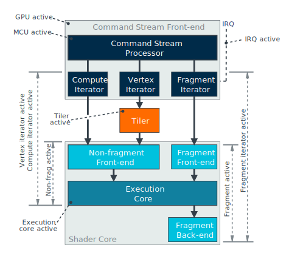
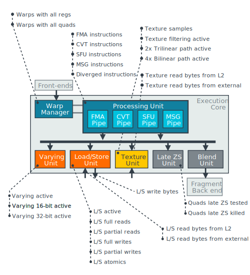

Arm Mali-G610
Home / Arm® Mali™-G610 Performance Counter Reference Filtered
Introduction
Arm GPUs provide a wide range of performance counters. You can use them to understand your application's performance characteristics, and to find behavioral inefficiencies to optimize. This guide explains the performance counters for the Mali-G610, which is a member of the Valhall second generation architecture family.
This introduction section will explain the high level goals to consider when profiling this GPU. Later sections will explain the available counters for each part of the GPU design.
Profiling GPU scheduling
The GPU runs workloads that have been submitted by the graphics driver, using scheduling barriers between workloads to ensure they run in the correct order. Workloads are scheduled to run by adding them to the appropriate hardware queue, which will run enqueued workloads in a pipelined FIFO processing order.

Tile-based rendering
Arm GPUs are tile-based GPUs, meaning that they process graphics render passes in two distinct phases. The first phase processes geometry to determine which primitives contribute to which screen-space tiles. The second phase renders the output framebuffer tile-by-tile.
In this design, tiles are small enough to be kept in on-chip tile memory, which makes fragment processing more efficient. However, in this generation of GPUs vertex shaders are processed in their entirety in the first phase with their outputs written back to main memory, and then re-read during the second phase. This makes geometry processing less efficient.
GPU queues
The GPU front-end in this generation of hardware has three hardware queues:
- Compute queue
- Vertex and tiling queue
- Fragment queue
The Compute queue is used for all compute-like workloads, including compute shaders, buffer transfers, geometry shaders, and tessellation shaders. The Vertex and tiling queue is used for vertex shading and binning. The Fragment queue is used for all fragment-like workloads, including fragment shading and most image transfers.
Monitoring your application's queue usage is the first stage of profiling an Arm GPU, as the queue costs give the overall processing cost of each type of workload. In addition you can see if your application is using barriers efficiently, allowing the queues to run their workloads in parallel.
Profiling GPU memory bandwidth
GPUs are data-plane processors, so memory access efficiency is an important factor for overall performance.

Memory system performance outside of the GPU cannot be directly observed via GPU performance counters, but the counters can show the performance observed by the GPU on its memory interface.
Reducing bandwidth
Accessing external DRAM is a very energy-intensive operation, which makes reducing external bandwidth an important optimization goal for mobile devices. Sustained high bandwidth can cause poor performance in main-stream devices, and thermal issues in high-end devices.
Shader core performance counters can give you more breakdown about which functional units are generating memory traffic, guiding your optimization efforts.
Reducing stalls
The memory system outside of the GPU is implemented by the chip manufacturer, and designs can vary and have different performance characteristics. Workloads that generate a significant number of memory stall cycles, or that see a large percentage of high latency reads, might be stressing the external memory system beyond its capabilities. Reducing memory bandwidth often gives measurable performance gains in these scenarios.
Profiling shader core usage
If the GPU queues are scheduling well, the next thing that you will need to profile to determine the processing bottleneck of a workload is your application's use of the shader core.
The Mali-G610 shader cores use a massively multi-threaded architecture, supporting thousands of concurrently running threads. A large pool of available threads allows the hardware to fill parallel functional units by switching to any of the available threads if the current thread becomes blocked for any reason.

In this type of architecture, the utilization of the functional units reflects the overall demand of the running shader programs. This is relatively independent of localized hot-spots in shaders that stress a single functional unit, because other threads will be running other parts of the program and will load-balance the hardware. This is quite different to profiling a CPU, where the serial instruction stream means that performance can be very sensitive to both latency and localized hot-spots.
Improve speed-of-light utilization
For functional unit profiling, we therefore aim for at least 75% utilization of the most heavily used functional unit, relative to its best case 'speed-of-light' performance. This shows that the application has done a good job getting its workload running without problematic stalls.
In this situation, reducing demand on the most heavily used functional units, either by improving efficiency or reducing size, should improve application performance.
Reduce shader core stalls
If no functional unit is heavily utilized, the shader core is running out of work to do. This can occur for multiple reasons, and should be avoided if possible.
The first reason is that the shader is literally running out of threads to run, and the shader core is running with low thread occupancy. GPUs rely on workloads having a lot of threads to fill the capacity of the shader core. You should avoid running small workloads with few threads on the GPU, preferring to use the CPU if possible. Note that some workloads, such as depth shadow maps, may not generate many fragment threads due to their algorithmic design. This is usually unavoidable, but is something to remember when profiling.
The second reason is that the running shader programs are causing operations to stall by missing in descriptor caches or data caches. GPUs use their thread count to hide the impact and latency of cache misses, but there are limits to the density of misses that can be hidden. In this situation, try to identify which workload is causing stalls and try to minimize them. There are not specific performance counters for every stall reason, so this can take some investigation and experimentation to determine which resource is causing the problem.
Profiling workload
In addition to profiling use of the hardware, measuring cycles and bytes, Arm GPUs provide many performance counters that can help you to understand the size and characteristics of your workload. These counters gives feedback in the context of API constructs, such as vertices, triangles, and pixels making it easier for developers to understand the feedback.

Supplementing the workload size counters, Arm GPUs also provide counters that indicate areas where content is not following best practice guidelines. Improving these best practice metrics will nearly always improve your application's performance or energy efficiency.
GPU Front-end
The GPU front-end is the interface between the GPU hardware and the driver. The front-end schedules command streams submitted by the driver on to multiple hardware work queues. Each work queue handles a specific type of workload and is responsible for breaking a workload into smaller tasks that can be dispatched to the shader cores. Work stays at the head of the queue while being processed, so queue activity is a direct way of measuring that the GPU is busy handling a workload.
In this generation of hardware there are three work queues:
- Compute queue for compute shaders and advanced geometry shaders.
- Vertex queue for the first phase of a render pass, handling vertex shading, and primitive culling and binning.
- Fragment queue for the second phase of a render pass, handling fragment shading.
It is beneficial to schedule work on multiple queues in parallel, as this can more evenly load balance the hardware. In this generation of hardware the Compute and Vertex queues can run in parallel to the Fragment queue, but serially with respect to each other. Parallel processing will increase the latency of individual tasks, but usually significantly improves overall throughput.
Performance counters in this section can show activity on each of the queues, which indicates the complexity and scheduling patterns of submitted workloads.
GPU Cycles
This counter group shows the workload processing activity level of the GPU, showing the overall use and when work was running for each of the hardware scheduling queues.
GPU active
This counter increments every clock cycle when the GPU has any pending workload present in one of its processing queues. It shows the overall GPU processing load requested by the application.
This counter increments when any workload is present in any processing queue, even if the GPU is stalled waiting for external memory. These cycles are counted as active time even though no progress is being made.
MaliGPUActiveCy
$MaliGPUCyclesGPUActive
GPU_ACTIVE
Any queue active
This counter increments every clock cycle when any GPU command queue is active with work for the tiler or shader cores.
MaliGPUAnyQueueActiveCy
$MaliGPUCyclesAnyQueueActive
GPU_ITER_ACTIVE
Compute queue active
This expression increments every clock cycle when the command stream compute queue has at least one task issued for processing.
MaliCompQueueActiveCy
libGPUCounters derivation:
MaliCompQueuedCy - MaliCompQueueAssignStallCyStreamline derivation:
$MaliGPUQueuedCyclesComputeQueued - $MaliGPUWaitCyclesComputeQueueEndpointStallsHardware derivation:
ITER_COMP_ACTIVE - ITER_COMP_READY_BLOCKEDVertex queue active
This expression increments every clock cycle when the command stream vertex queue has at least one task issued for processing.
MaliVertQueueActiveCy
libGPUCounters derivation:
MaliVertQueuedCy - MaliVertQueueAssignStallCyStreamline derivation:
$MaliGPUQueuedCyclesVertexQueued - $MaliGPUWaitCyclesVertexQueueEndpointStallsHardware derivation:
ITER_TILER_ACTIVE - ITER_TILER_READY_BLOCKEDFragment queue active
This expression increments every clock cycle when the command stream fragment queue has at least one task issued for processing.
MaliFragQueueActiveCy
libGPUCounters derivation:
MaliFragQueuedCy - MaliFragQueueAssignStallCyStreamline derivation:
$MaliGPUQueuedCyclesFragmentQueued - $MaliGPUWaitCyclesFragmentQueueEndpointStallsHardware derivation:
ITER_FRAG_ACTIVE - ITER_FRAG_READY_BLOCKEDTiler active
This counter increments every clock cycle the tiler has a workload in its processing queue. The tiler is responsible for coordinating geometry processing and providing the fixed-function tiling needed for the Mali tile-based rendering pipeline. It can run in parallel to vertex shading and fragment shading.
A high cycle count here does not necessarily imply a bottleneck, unless the Non-fragment active cycles counter in the shader core is comparatively low.
MaliTilerActiveCy
$MaliGPUCyclesTilerActive
TILER_ACTIVE
GPU interrupt active
This counter increments every clock cycle when the GPU has an interrupt pending and is waiting for the CPU to process it.
Cycles with a pending interrupt do not necessarily indicate lost performance because the GPU can process other queued work in parallel. However, if GPU interrupt pending cycles are a high percentage of GPU active cycles, an underlying problem might be preventing the CPU from efficiently handling interrupts. This problem is normally a system integration issue, which an application developer cannot work around.
MaliGPUIRQActiveCy
$MaliGPUCyclesGPUInterruptActive
GPU_IRQ_ACTIVE
GPU Queued Cycles
This counter group shows the workload scheduling behavior of the GPU queues, showing when queues contained work, including cycles where a queue was stalled and could not start an enqueued workload.
Compute queued
This counter increments every clock cycle when the command stream compute queue has work queued. The count includes cycles when the queue is stalled because of endpoint contention.
MaliCompQueuedCy
$MaliGPUQueuedCyclesComputeQueued
ITER_COMP_ACTIVE
Vertex queued
This counter increments every clock cycle when the command stream vertex shading queue has work queued. The count includes cycles when the queue is stalled because of endpoint contention.
MaliVertQueuedCy
$MaliGPUQueuedCyclesVertexQueued
ITER_TILER_ACTIVE
Fragment queued
This counter increments every clock cycle when the command stream fragment queue has work queued. The count includes cycles when the queue is stalled because of endpoint contention.
MaliFragQueuedCy
$MaliGPUQueuedCyclesFragmentQueued
ITER_FRAG_ACTIVE
GPU Wait Cycles
This counter group shows the workload scheduling behavior of the GPU queues, showing reasons for any scheduling stalls for each queue.
Compute queue endpoint drain stalls
This counter increments every clock cycle when compute work is queued but cannot start because IDVS work is still active on the shared endpoints.
MaliCompQueueDrainStallCy
$MaliGPUWaitCyclesComputeQueueEndpointDrainStalls
ITER_COMP_EP_DRAIN
Compute queue endpoint stalls
This counter increments every clock cycle when compute work is queued but cannot start because no endpoints have been assigned.
MaliCompQueueAssignStallCy
$MaliGPUWaitCyclesComputeQueueEndpointStalls
ITER_COMP_READY_BLOCKED
Vertex queue endpoint drain stalls
This counter increments every clock cycle when vertex work is queued but cannot start because compute work is still active on the shared endpoints.
MaliTilerQueueDrainStallCy
$MaliGPUWaitCyclesVertexQueueEndpointDrainStalls
ITER_TILER_EP_DRAIN
Vertex queue endpoint stalls
This counter increments every clock cycle when vertex work is queued but cannot start because no endpoints have been assigned.
MaliVertQueueAssignStallCy
$MaliGPUWaitCyclesVertexQueueEndpointStalls
ITER_TILER_READY_BLOCKED
Fragment queue endpoint stalls
This counter increments every clock cycle when fragment work is queued but cannot start because no endpoints have been assigned.
MaliFragQueueAssignStallCy
$MaliGPUWaitCyclesFragmentQueueEndpointStalls
ITER_FRAG_READY_BLOCKED
GPU Jobs
This counter group shows the total number of workload jobs issued to the GPU front-end for each queue. Most jobs will correspond to an API workload, for example a compute dispatch generates a compute job. However, the driver can also generate small house-keeping jobs for each queue, so job counts do not directly correlate with API behavior.
Compute jobs
This counter increments for every job processed by the compute queue.
MaliCompQueueJob
$MaliGPUJobsComputeJobs
ITER_COMP_JOB_COMPLETED
GPU Tasks
This counter group shows the total number of workload tasks issued by the GPU front-end to the processing end-points inside the GPU.
Compute tasks
This counter increments for every compute task processed by the GPU.
MaliCompQueueTask
$MaliGPUTasksComputeTasks
ITER_COMP_TASK_COMPLETED
Vertex tasks
This counter increments for every vertex task processed by the GPU.
MaliVertQueueTask
$MaliGPUTasksVertexTasks
ITER_TILER_IDVS_TASK_COMPLETED
Fragment tasks
This counter increments for every 32 x 32 pixel region of a render pass that is processed by the GPU. The processed region of a render pass can be smaller than the full size of the attached surfaces if the application's viewport and scissor settings prevent the whole image being rendered.
MaliFragQueueTask
$MaliGPUTasksFragmentTasks
ITER_FRAG_TASK_COMPLETED
GPU Utilization
This counter group shows the workload processing activity level of the GPU queues, normalized as a percentage of overall GPU activity.
Compute queue utilization
This expression defines the compute queue utilization compared against the GPU active cycles.
For GPU bound content, it is expected that the GPU queues process work in parallel. The dominant queue must be close to 100% utilized to get the best performance. If no queue is dominant, but the GPU is fully utilized, then a serialization or dependency problem might be preventing queue overlap.
MaliCompQueueUtil
libGPUCounters derivation:
max(min(((MaliCompQueuedCy - MaliCompQueueAssignStallCy) / MaliGPUActiveCy) * 100, 100), 0)Streamline derivation:
max(min((($MaliGPUQueuedCyclesComputeQueued - $MaliGPUWaitCyclesComputeQueueEndpointStalls) / $MaliGPUCyclesGPUActive) * 100, 100), 0)Hardware derivation:
max(min(((ITER_COMP_ACTIVE - ITER_COMP_READY_BLOCKED) / GPU_ACTIVE) * 100, 100), 0)Vertex queue utilization
This expression defines the vertex queue utilization compared against the GPU active cycles.
For GPU bound content, it is expected that the GPU queues process work in parallel. The dominant queue must be close to 100% utilized to get the best performance. If no queue is dominant, but the GPU is fully utilized, then a serialization or dependency problem might be preventing queue overlap.
MaliVertQueueUtil
libGPUCounters derivation:
max(min(((MaliVertQueuedCy - MaliVertQueueAssignStallCy) / MaliGPUActiveCy) * 100, 100), 0)Streamline derivation:
max(min((($MaliGPUQueuedCyclesVertexQueued - $MaliGPUWaitCyclesVertexQueueEndpointStalls) / $MaliGPUCyclesGPUActive) * 100, 100), 0)Hardware derivation:
max(min(((ITER_TILER_ACTIVE - ITER_TILER_READY_BLOCKED) / GPU_ACTIVE) * 100, 100), 0)Fragment queue utilization
This expression defines the fragment queue utilization compared against the GPU active cycles. For GPU bound content, it is expected that the GPU queues process work in parallel. The dominant queue must be close to 100% utilized to get the best performance. If no queue is dominant, but the GPU is fully utilized, then a serialization or dependency problem might be preventing scheduling overlap.
MaliFragQueueUtil
libGPUCounters derivation:
max(min(((MaliFragQueuedCy - MaliFragQueueAssignStallCy) / MaliGPUActiveCy) * 100, 100), 0)Streamline derivation:
max(min((($MaliGPUQueuedCyclesFragmentQueued - $MaliGPUWaitCyclesFragmentQueueEndpointStalls) / $MaliGPUCyclesGPUActive) * 100, 100), 0)Hardware derivation:
max(min(((ITER_FRAG_ACTIVE - ITER_FRAG_READY_BLOCKED) / GPU_ACTIVE) * 100, 100), 0)Tiler utilization
This expression defines the tiler utilization compared to the total GPU active cycles.
Note that this metric measures the overall processing time for the tiler geometry pipeline. The metric includes aspects of vertex shading, in addition to the fixed-function tiling process.
MaliTilerUtil
libGPUCounters derivation:
max(min((MaliTilerActiveCy / MaliGPUActiveCy) * 100, 100), 0)Streamline derivation:
max(min(($MaliGPUCyclesTilerActive / $MaliGPUCyclesGPUActive) * 100, 100), 0)Hardware derivation:
max(min((TILER_ACTIVE / GPU_ACTIVE) * 100, 100), 0)Interrupt utilization
This expression defines the IRQ pending utilization compared against the GPU active cycles. In a well-functioning system, this expression should be less than 3% of the total cycles. If the value is much higher than this, a system issue might be preventing the CPU from efficiently handling interrupts.
MaliGPUIRQUtil
libGPUCounters derivation:
max(min((MaliGPUIRQActiveCy / MaliGPUActiveCy) * 100, 100), 0)Streamline derivation:
max(min(($MaliGPUCyclesGPUInterruptActive / $MaliGPUCyclesGPUActive) * 100, 100), 0)Hardware derivation:
max(min((GPU_IRQ_ACTIVE / GPU_ACTIVE) * 100, 100), 0)GPU Messages
This counter group shows the total number of control-plane messages issued by the GPU front-end to the processing end-points inside the GPU.
GPU Cache Flushes
This counter group shows the total number of L2 cache and MMU operations performed by the GPU top-level.
GPU Cache Flush Cycles
This counter group shows the total number of cycles spent performing L2 cache and MMU operations by GPU top-level.
CSF Cycles
This counter group shows the total number of cycles that each of the sub-units inside the command stream front-end was active.
CEU active
This counter increments every clock cycle when the GPU command execution unit is active.
MaliCSFCEUActiveCy
$MaliCSFCyclesCEUActive
CEU_ACTIVE
CSF Utilization
This counter group shows the use of each of the functional units inside the command stream front-end, relative to their speed-of-light capability.
CEU utilization
This expression defines the front-end command execution unit utilization compared against the GPU active cycles.
MaliCSFCEUUtil
libGPUCounters derivation:
max(min((MaliCSFCEUActiveCy / MaliGPUActiveCy) * 100, 100), 0)Streamline derivation:
max(min(($MaliCSFCyclesCEUActive / $MaliGPUCyclesGPUActive) * 100, 100), 0)Hardware derivation:
max(min((CEU_ACTIVE / GPU_ACTIVE) * 100, 100), 0)LSU utilization
This expression defines the front-end load/store unit utilization compared against the GPU active cycles.
MaliCSFLSUUtil
libGPUCounters derivation:
max(min((MaliCSFLSUActiveCy / MaliGPUActiveCy) * 100, 100), 0)Streamline derivation:
max(min(($MaliCSFCyclesLSUActive / $MaliGPUCyclesGPUActive) * 100, 100), 0)Hardware derivation:
max(min((LSU_ACTIVE / GPU_ACTIVE) * 100, 100), 0)MCU utilization
This expression defines the microcontroller utilization compared against the GPU active cycles.
High microcontroller load can be indicative of content using many emulated commands, such as command stream scheduling and synchronization operations.
MaliCSFMCUUtil
libGPUCounters derivation:
max(min((MaliCSFMCUActiveCy / MaliGPUActiveCy) * 100, 100), 0)Streamline derivation:
max(min(($MaliCSFCyclesMCUActive / $MaliGPUCyclesGPUActive) * 100, 100), 0)Hardware derivation:
max(min((MCU_ACTIVE / GPU_ACTIVE) * 100, 100), 0)CSF Stream Cycles
This counter group shows the total number of cycles that each of the command stream interfaces was active.
CS0 active
This counter increments every clock cycle when command stream interface 0 contained a command stream. This does not necessarily indicate that the command stream was actively being processed by the main GPU.
MaliCSFCS0ActiveCy
$MaliCSFStreamCyclesCS0Active
CSHWIF0_ENABLED
CS1 active
This counter increments every clock cycle when command stream interface 1 contained a command stream. This does not necessarily indicate that the command stream was actively being processed by the main GPU.
MaliCSFCS1ActiveCy
$MaliCSFStreamCyclesCS1Active
CSHWIF1_ENABLED
CS2 active
This counter increments every clock cycle when command stream interface 2 contained a command stream. This does not necessarily indicate that the command stream was actively being processed by the main GPU.
MaliCSFCS2ActiveCy
$MaliCSFStreamCyclesCS2Active
CSHWIF2_ENABLED
CS3 active
This counter increments every clock cycle when command stream interface 3 contained a command stream. This does not necessarily indicate that the command stream was actively being processed by the main GPU.
MaliCSFCS3ActiveCy
$MaliCSFStreamCyclesCS3Active
CSHWIF3_ENABLED
CSF Stream Stall Cycles
This counter group shows the total number of cycles that each of the command stream interfaces stalled for any reason.
CS0 wait stalls
This counter increments every clock cycle when command stream interface 0 was blocked due an outstanding scheduling dependency.
MaliCS0WaitStallCy
$MaliCSFStreamStallCyclesCS0WaitStalls
CSHWIF0_WAIT_BLOCKED
CS1 wait stalls
This counter increments every clock cycle when command stream interface 1 was blocked due an outstanding scheduling dependency.
MaliCS1WaitStallCy
$MaliCSFStreamStallCyclesCS1WaitStalls
CSHWIF1_WAIT_BLOCKED
External Memory System
The GPU external memory interface connects the GPU to the system DRAM, via an on-chip memory bus. The exact configuration of the memory system outside of the GPU varies from device to device and might include additional levels of system cache before reaching the off-chip memory.
GPUs are data-plane processors, with workloads that are too large to keep in system cache and that therefore make heavy use of main memory. GPUs are designed to be tolerant of high latency, when compared to a CPU, but poor memory system performance can still reduce GPU efficiency.
Accessing external DRAM is one of the most energy-intensive operations that the GPU can perform. Reducing memory bandwidth is a key optimization goal for mobile applications, even if not bandwidth limited, ensuring users get long battery life and thermally stable performance.
Performance counters in this section measure how much memory bandwidth your application uses, as well as stall and latency counters to show how well the memory system is coping with the generated traffic.
External Bus Accesses
This counter group shows the absolute number of external memory transactions generated by the GPU.
Read transactions
This counter increments for every external read transaction made on the memory bus. These transactions typically result in an external DRAM access, but some designs include a system cache which can provide some buffering.
The longest memory transaction possible is 64 bytes in length, but shorter transactions are generated in some circumstances.
MaliExtBusRd
$MaliExternalBusAccessesReadTransactions
L2_EXT_READ
Write transactions
This counter increments for every external write transaction made on the memory bus. These transactions typically result in an external DRAM access, but some chips include a system cache which can provide some buffering.
The longest memory transaction possible is 64 bytes in length, but shorter transactions are generated in some circumstances.
MaliExtBusWr
$MaliExternalBusAccessesWriteTransactions
L2_EXT_WRITE
ReadNoSnoop transactions
This counter increments for every non-coherent (ReadNoSnp) transaction.
MaliExtBusRdNoSnoop
$MaliExternalBusAccessesReadNoSnoopTransactions
L2_EXT_READ_NOSNP
ReadUnique transactions
This counter increments for every coherent exclusive read (ReadUnique) transaction.
MaliExtBusRdUnique
$MaliExternalBusAccessesReadUniqueTransactions
L2_EXT_READ_UNIQUE
Snoop transactions
This counter increments for every coherency snoop transaction received from an external requester.
MaliL2CacheIncSnp
$MaliExternalBusAccessesSnoopTransactions
L2_EXT_SNOOP
WriteNoSnoopFull transactions
This counter increments for every external non-coherent full write (WriteNoSnpFull) transaction.
MaliExtBusWrNoSnoopFull
$MaliExternalBusAccessesWriteNoSnoopFullTransactions
L2_EXT_WRITE_NOSNP_FULL
WriteNoSnoopPartial transactions
This counter increments for every external non-coherent partial write (WriteNoSnpPtl) transaction.
MaliExtBusWrNoSnoopPart
$MaliExternalBusAccessesWriteNoSnoopPartialTransactions
L2_EXT_WRITE_NOSNP_PTL
External Bus Beats
This counter group shows the absolute amount of external memory data transfer cycles used by the GPU.
Read beats
This counter increments for every clock cycle when a data beat was read from the external memory bus.
Most implementations use a 128-bit (16-byte) data bus, enabling a single 64-byte read transaction to be read using 4 bus cycles.
MaliExtBusRdBt
$MaliExternalBusBeatsReadBeats
L2_EXT_READ_BEATS
Write beats
This counter increments for every clock cycle when a data beat was written to the external memory bus.
Most implementations use a 128-bit (16-byte) data bus, enabling a single 64-byte read transaction to be written using 4 bus cycles.
MaliExtBusWrBt
$MaliExternalBusBeatsWriteBeats
L2_EXT_WRITE_BEATS
External Bus Bytes
This counter group shows the absolute amount of external memory traffic generated by the GPU. Absolute measures are the most useful way to check actual bandwidth against a per-frame bandwidth budget.
Read bytes
This expression defines the total output read bandwidth for the GPU.
MaliExtBusRdBy
libGPUCounters derivation:
MaliExtBusRdBt * MALI_CONFIG_EXT_BUS_BYTE_SIZEStreamline derivation:
$MaliExternalBusBeatsReadBeats * ($MaliConstantsBusWidthBits / 8)Hardware derivation:
L2_EXT_READ_BEATS * MALI_CONFIG_EXT_BUS_BYTE_SIZEWrite bytes
This expression defines the total output write bandwidth for the GPU.
MaliExtBusWrBy
libGPUCounters derivation:
MaliExtBusWrBt * MALI_CONFIG_EXT_BUS_BYTE_SIZEStreamline derivation:
$MaliExternalBusBeatsWriteBeats * ($MaliConstantsBusWidthBits / 8)Hardware derivation:
L2_EXT_WRITE_BEATS * MALI_CONFIG_EXT_BUS_BYTE_SIZEExternal Bus Bandwidth
This counter group shows the external memory traffic generated by the GPU, presented as a bytes/second rate. Rates are the most useful way to check actual bandwidth against the design limits of a chip, which will usually be specified in bytes/second.
Read bandwidth
This expression defines the total output read bandwidth for the GPU, measured in bytes per second.
MaliExtBusRdBPS
libGPUCounters derivation:
(MaliExtBusRdBt * MALI_CONFIG_EXT_BUS_BYTE_SIZE) / MALI_CONFIG_TIME_SPANStreamline derivation:
($MaliExternalBusBeatsReadBeats * ($MaliConstantsBusWidthBits / 8)) / $ZOOMHardware derivation:
(L2_EXT_READ_BEATS * MALI_CONFIG_EXT_BUS_BYTE_SIZE) / MALI_CONFIG_TIME_SPANWrite bandwidth
This expression defines the total output write bandwidth for the GPU, measured in bytes per second.
MaliExtBusWrBPS
libGPUCounters derivation:
(MaliExtBusWrBt * MALI_CONFIG_EXT_BUS_BYTE_SIZE) / MALI_CONFIG_TIME_SPANStreamline derivation:
($MaliExternalBusBeatsWriteBeats * ($MaliConstantsBusWidthBits / 8)) / $ZOOMHardware derivation:
(L2_EXT_WRITE_BEATS * MALI_CONFIG_EXT_BUS_BYTE_SIZE) / MALI_CONFIG_TIME_SPANExternal Bus Stall Cycles
This counter group shows the absolute number of external memory interface stalls, which is the number of cycles that the GPU was trying to send data but the external bus could not accept it.
Read stalls
This counter increments for every stall cycle on the AXI bus where the GPU has a valid read transaction to send, but is awaiting a ready signal from the bus.
MaliExtBusRdStallCy
$MaliExternalBusStallCyclesReadStalls
L2_EXT_AR_STALL
Write stalls
This counter increments for every stall cycle on the external bus where the GPU has a valid write transaction to send, but is awaiting a ready signal from the external bus.
MaliExtBusWrStallCy
$MaliExternalBusStallCyclesWriteStalls
L2_EXT_W_STALL
External Bus Stall Rate
This counter group shows the percentage of cycles that the GPU was trying to send data, but by the external bus could not accept it.
A small number of stalls is expected, but sustained periods of with stall rates above 10% might indicate that the GPU is generating more traffic than the downstream memory system can handle efficiently.
Read stall rate
This expression defines the percentage of GPU cycles with a memory stall on an external read transaction.
Stall rates can be reduced by reducing the size of data resources, such as buffers or textures.
MaliExtBusRdStallRate
libGPUCounters derivation:
max(min((MaliExtBusRdStallCy / MALI_CONFIG_L2_CACHE_COUNT / MaliGPUActiveCy) * 100, 100), 0)Streamline derivation:
max(min(($MaliExternalBusStallCyclesReadStalls / $MaliConstantsL2SliceCount / $MaliGPUCyclesGPUActive) * 100, 100), 0)Hardware derivation:
max(min((L2_EXT_AR_STALL / MALI_CONFIG_L2_CACHE_COUNT / GPU_ACTIVE) * 100, 100), 0)Write stall rate
This expression defines the percentage of GPU cycles with a memory stall on an external write transaction.
Stall rates can be reduced by reducing geometry complexity, or the size of framebuffers in memory.
MaliExtBusWrStallRate
libGPUCounters derivation:
max(min((MaliExtBusWrStallCy / MALI_CONFIG_L2_CACHE_COUNT / MaliGPUActiveCy) * 100, 100), 0)Streamline derivation:
max(min(($MaliExternalBusStallCyclesWriteStalls / $MaliConstantsL2SliceCount / $MaliGPUCyclesGPUActive) * 100, 100), 0)Hardware derivation:
max(min((L2_EXT_W_STALL / MALI_CONFIG_L2_CACHE_COUNT / GPU_ACTIVE) * 100, 100), 0)External Bus Read Latency
This counter group shows the histogram distribution of memory latency for GPU reads.
GPUs are more tolerant to latency than a CPU, but sustained periods of high latency might indicate that the GPU is generating more traffic than the downstream memory system can handle efficiently.
0-127 cycles
This counter increments for every data beat that is returned between 0 and 127 cycles after the read transaction started. This latency is considered a fast access response speed.
MaliExtBusRdLat0
$MaliExternalBusReadLatency0127Cycles
L2_EXT_RRESP_0_127
128-191 cycles
This counter increments for every data beat that is returned between 128 and 191 cycles after the read transaction started. This latency is considered a normal access response speed.
MaliExtBusRdLat128
$MaliExternalBusReadLatency128191Cycles
L2_EXT_RRESP_128_191
192-255 cycles
This counter increments for every data beat that is returned between 192 and 255 cycles after the read transaction started. This latency is considered a normal access response speed.
MaliExtBusRdLat192
$MaliExternalBusReadLatency192255Cycles
L2_EXT_RRESP_192_255
256-319 cycles
This counter increments for every data beat that is returned between 256 and 319 cycles after the read transaction started. This latency is considered a slow access response speed.
MaliExtBusRdLat256
$MaliExternalBusReadLatency256319Cycles
L2_EXT_RRESP_256_319
320-383 cycles
This counter increments for every data beat that is returned between 320 and 383 cycles after the read transaction started. This latency is considered a slow access response speed.
MaliExtBusRdLat320
$MaliExternalBusReadLatency320383Cycles
L2_EXT_RRESP_320_383
384+ cycles
This expression increments for every read beat that is returned at least 384 cycles after the transaction started. This latency is considered a very slow access response speed.
MaliExtBusRdLat384
libGPUCounters derivation:
MaliExtBusRdBt - MaliExtBusRdLat0 - MaliExtBusRdLat128 - MaliExtBusRdLat192 - MaliExtBusRdLat256 - MaliExtBusRdLat320Streamline derivation:
$MaliExternalBusBeatsReadBeats - $MaliExternalBusReadLatency0127Cycles - $MaliExternalBusReadLatency128191Cycles - $MaliExternalBusReadLatency192255Cycles - $MaliExternalBusReadLatency256319Cycles - $MaliExternalBusReadLatency320383CyclesHardware derivation:
L2_EXT_READ_BEATS - L2_EXT_RRESP_0_127 - L2_EXT_RRESP_128_191 - L2_EXT_RRESP_192_255 - L2_EXT_RRESP_256_319 - L2_EXT_RRESP_320_383External Bus Outstanding Reads
This counter group shows the histogram distribution of the use of the available pool of outstanding memory read transactions.
Sustained periods with most read transactions outstanding may indicate that the GPU hardware configuration is running out of outstanding read capacity.
0-25% outstanding
This counter increments for every read transaction initiated when 0-25% of the available transaction IDs are in use.
MaliExtBusRdOTQ1
$MaliExternalBusOutstandingReads025Outstanding
L2_EXT_AR_CNT_Q1
25-50% outstanding
This counter increments for every read transaction initiated when 25-50% of the available transaction IDs are in use.
MaliExtBusRdOTQ2
$MaliExternalBusOutstandingReads2550Outstanding
L2_EXT_AR_CNT_Q2
50-75% outstanding
This counter increments for every read transaction initiated when 50-75% of the available transaction IDs are in use.
MaliExtBusRdOTQ3
$MaliExternalBusOutstandingReads5075Outstanding
L2_EXT_AR_CNT_Q3
75-100% outstanding
This expression increments for every read transaction initiated when 75-100% of transaction IDs are in use.
MaliExtBusRdOTQ4
libGPUCounters derivation:
MaliExtBusRd - MaliExtBusRdOTQ1 - MaliExtBusRdOTQ2 - MaliExtBusRdOTQ3Streamline derivation:
$MaliExternalBusAccessesReadTransactions - $MaliExternalBusOutstandingReads025Outstanding - $MaliExternalBusOutstandingReads2550Outstanding - $MaliExternalBusOutstandingReads5075OutstandingHardware derivation:
L2_EXT_READ - L2_EXT_AR_CNT_Q1 - L2_EXT_AR_CNT_Q2 - L2_EXT_AR_CNT_Q3External Bus Outstanding Writes
This counter group shows the histogram distribution of the use of the available pool of outstanding memory write transactions.
Sustained periods with most write transactions outstanding may indicate that the GPU hardware configuration is running out of outstanding write capacity.
0-25% outstanding
This counter increments for every write transaction initiated when 0-25% of the available transaction IDs are in use.
MaliExtBusWrOTQ1
$MaliExternalBusOutstandingWrites025Outstanding
L2_EXT_AW_CNT_Q1
25-50% outstanding
This counter increments for every write transaction initiated when 25-50% of the available transaction IDs are in use.
MaliExtBusWrOTQ2
$MaliExternalBusOutstandingWrites2550Outstanding
L2_EXT_AW_CNT_Q2
50-75% outstanding
This counter increments for every write transaction initiated when 50-75% of the available transaction IDs are in use.
MaliExtBusWrOTQ3
$MaliExternalBusOutstandingWrites5075Outstanding
L2_EXT_AW_CNT_Q3
75-100% outstanding
This expression increments for every write transaction initiated when 75-100% of transaction IDs are in use.
MaliExtBusWrOTQ4
libGPUCounters derivation:
MaliExtBusWr - MaliExtBusWrOTQ1 - MaliExtBusWrOTQ2 - MaliExtBusWrOTQ3Streamline derivation:
$MaliExternalBusAccessesWriteTransactions - $MaliExternalBusOutstandingWrites025Outstanding - $MaliExternalBusOutstandingWrites2550Outstanding - $MaliExternalBusOutstandingWrites5075OutstandingHardware derivation:
L2_EXT_WRITE - L2_EXT_AW_CNT_Q1 - L2_EXT_AW_CNT_Q2 - L2_EXT_AW_CNT_Q3Graphics Geometry Workload
Graphics workloads using the rasterization pipeline pass inputs to the GPU as a geometry stream. Vertices in this stream are position shaded, assembled into primitives, and then passed through a culling pipeline before being passed to the Arm GPU binning unit.
Performance counters in this section show how the input geometry is processed, indicating the overall complexity of the geometry workload and how it is processed by the primitive culling stages.
Input Primitives
This counter group shows the number of input primitives to the GPU, before any culling is applied.
Input primitives
This expression defines the total number of input primitives to the rendering process.
High complexity geometry is one of the most expensive inputs to the GPU, because vertices are much larger than compressed texels. Optimize your geometry to minimize mesh complexity, using dynamic level-of-detail and normal maps to reduce the number of primitives required.
MaliGeomTotalPrim
libGPUCounters derivation:
MaliGeomFaceXYPlaneCullPrim + MaliGeomZPlaneCullPrim + MaliGeomSampleCullPrim + MaliGeomVisiblePrimStreamline derivation:
$MaliPrimitiveCullingFacingOrXYPlaneTestCulledPrimitives + $MaliPrimitiveCullingZPlaneTestCulledPrimitives + $MaliPrimitiveCullingSampleTestCulledPrimitives + $MaliPrimitiveCullingVisiblePrimitivesHardware derivation:
PRIM_CULLED + PRIM_CLIPPED + PRIM_SAT_CULLED + PRIM_VISIBLETriangle primitives
This counter increments for every input triangle primitive. The count is made before any culling or clipping.
MaliGeomTrianglePrim
$MaliInputPrimitivesTrianglePrimitives
TRIANGLES
Visible Primitives
This counter group shows the properties of any visible primitives, after any culling is applied.
Primitive Culling
This counter group shows the absolute number of primitives that are culled by each of the culling stages in the geometry pipeline, and the number of visible primitives that are not culled by any stage.
Visible primitives
This counter increments for every visible primitive that survives all culling stages.
All fragments of the primitive might be occluded by other primitives closer to the camera, and so produce no visible output.
MaliGeomVisiblePrim
$MaliPrimitiveCullingVisiblePrimitives
PRIM_VISIBLE
Culled primitives
This expression defines the number of primitives that were culled during the rendering process, for any reason.
For efficient 3D content, it is expected that only 50% of primitives are visible because back-face culling is used to remove half of each model.
MaliGeomTotalCullPrim
libGPUCounters derivation:
MaliGeomFaceXYPlaneCullPrim + MaliGeomZPlaneCullPrim + MaliGeomSampleCullPrimStreamline derivation:
$MaliPrimitiveCullingFacingOrXYPlaneTestCulledPrimitives + $MaliPrimitiveCullingZPlaneTestCulledPrimitives + $MaliPrimitiveCullingSampleTestCulledPrimitivesHardware derivation:
PRIM_CULLED + PRIM_CLIPPED + PRIM_SAT_CULLEDFacing or XY plane test culled primitives
This counter increments for every primitive culled by the facing test, or culled by testing against the view frustum X and Y clip planes.
For an arbitrary 3D scene we would expect approximately half of the triangles to be back-facing. If you see a significantly lower percentage than this, check that the facing test is properly enabled.
It is expected that a small number of primitives are outside of the frustum extents, as application culling is never perfect and some models might intersect a frustum clip plane. If this counter is significantly higher than half of the triangles, use draw call bounding box checks to cull draws that are completely out-of-frustum.
If batched draw calls are complex and have a large bounding volume, consider using smaller batches to reduce the bounding volume to enable better culling.
MaliGeomFaceXYPlaneCullPrim
$MaliPrimitiveCullingFacingOrXYPlaneTestCulledPrimitives
PRIM_CULLED
Z plane test culled primitives
This counter increments for every primitive culled by testing against the view frustum near and far clip planes.
It is expected that a small number of primitives are outside of the frustum extents, as application culling is never perfect and some models might intersect a frustum clip plane.
Use draw call bounding box checks to cull draws that are completely out-of-frustum. If batched draw calls are complex and have a large bounding volume consider using smaller batches to reduce the bounding volume to enable better culling.
MaliGeomZPlaneCullPrim
$MaliPrimitiveCullingZPlaneTestCulledPrimitives
PRIM_CLIPPED
Sample test culled primitives
This counter increments for every primitive culled by the sample coverage test. It is expected that a few primitives are small and fail the sample coverage test, as application mesh level-of-detail selection can never be perfect. If the number of primitives counted is more than than 5-10% of the total number, this might indicate that the application has a large number of very small triangles, which are very expensive for a GPU to process.
Aim to keep triangle screen area above 10 pixels. Use schemes such as mesh level-of-detail to select simplified meshes as objects move further away from the camera.
MaliGeomSampleCullPrim
$MaliPrimitiveCullingSampleTestCulledPrimitives
PRIM_SAT_CULLED
Primitive Culling Rate
This counter group shows the percentage of the primitives that use each culling stage that are culled by it, and the percentage of primitives that are visible and not culled by any stage.
Visible primitive rate
This expression defines the percentage of primitives that are visible after culling.
For efficient 3D content, it is expected that only 50% of primitives are visible because back-face culling is used to remove half of each model.
- A significantly higher visibility rate indicates that the facing test might not be enabled.
- A significantly lower visibility rate indicates that geometry is being culled for other reasons, which is often possible to optimize. Use the individual culling counters for a more detailed breakdown.
MaliGeomVisibleRate
libGPUCounters derivation:
max(min((MaliGeomVisiblePrim / (MaliGeomFaceXYPlaneCullPrim + MaliGeomZPlaneCullPrim + MaliGeomSampleCullPrim + MaliGeomVisiblePrim)) * 100, 100), 0)Streamline derivation:
max(min(($MaliPrimitiveCullingVisiblePrimitives / ($MaliPrimitiveCullingFacingOrXYPlaneTestCulledPrimitives + $MaliPrimitiveCullingZPlaneTestCulledPrimitives + $MaliPrimitiveCullingSampleTestCulledPrimitives + $MaliPrimitiveCullingVisiblePrimitives)) * 100, 100), 0)Hardware derivation:
max(min((PRIM_VISIBLE / (PRIM_CULLED + PRIM_CLIPPED + PRIM_SAT_CULLED + PRIM_VISIBLE)) * 100, 100), 0)Facing or XY plane culled primitive rate
This expression defines the percentage of primitives entering the facing and XY plane test that are culled by it. Primitives that are outside of the view frustum in the XY axis, or that are back-facing inside the frustum, are culled by this stage.
For efficient 3D content, it is expected that 50% of primitives are culled by the facing test. If more than 50% of primitives are culled it might be because they are out-of-frustum, which can often be optimized with better software culling or batching granularity.
MaliGeomFaceXYPlaneCullRate
libGPUCounters derivation:
max(min((MaliGeomFaceXYPlaneCullPrim / (MaliGeomFaceXYPlaneCullPrim + MaliGeomZPlaneCullPrim + MaliGeomSampleCullPrim + MaliGeomVisiblePrim)) * 100, 100), 0)Streamline derivation:
max(min(($MaliPrimitiveCullingFacingOrXYPlaneTestCulledPrimitives / ($MaliPrimitiveCullingFacingOrXYPlaneTestCulledPrimitives + $MaliPrimitiveCullingZPlaneTestCulledPrimitives + $MaliPrimitiveCullingSampleTestCulledPrimitives + $MaliPrimitiveCullingVisiblePrimitives)) * 100, 100), 0)Hardware derivation:
max(min((PRIM_CULLED / (PRIM_CULLED + PRIM_CLIPPED + PRIM_SAT_CULLED + PRIM_VISIBLE)) * 100, 100), 0)Z plane culled primitive rate
This expression defines the percentage of primitives entering the Z plane culling test that are culled by it. Primitives that are closer than the frustum near clip plane, or further away than the frustum far clip plane, are culled by this stage.
Seeing a significant proportion of triangles culled at this stage can be indicative of insufficient application software culling.
MaliGeomZPlaneCullRate
libGPUCounters derivation:
max(min((MaliGeomZPlaneCullPrim / ((MaliGeomFaceXYPlaneCullPrim + MaliGeomZPlaneCullPrim + MaliGeomSampleCullPrim + MaliGeomVisiblePrim) - MaliGeomFaceXYPlaneCullPrim)) * 100, 100), 0)Streamline derivation:
max(min(($MaliPrimitiveCullingZPlaneTestCulledPrimitives / (($MaliPrimitiveCullingFacingOrXYPlaneTestCulledPrimitives + $MaliPrimitiveCullingZPlaneTestCulledPrimitives + $MaliPrimitiveCullingSampleTestCulledPrimitives + $MaliPrimitiveCullingVisiblePrimitives) - $MaliPrimitiveCullingFacingOrXYPlaneTestCulledPrimitives)) * 100, 100), 0)Hardware derivation:
max(min((PRIM_CLIPPED / ((PRIM_CULLED + PRIM_CLIPPED + PRIM_SAT_CULLED + PRIM_VISIBLE) - PRIM_CULLED)) * 100, 100), 0)Sample culled primitive rate
This expression defines the percentage of primitives entering the sample coverage test that are culled by it. This stage culls primitives that are so small that they hit no rasterizer sample points.
If a significant number of triangles are culled at this stage, the application is using geometry meshes that are too complex for their screen coverage. Use schemes such as mesh level-of-detail to select simplified meshes as objects move further away from the camera.
MaliGeomSampleCullRate
libGPUCounters derivation:
max(min((MaliGeomSampleCullPrim / ((MaliGeomFaceXYPlaneCullPrim + MaliGeomZPlaneCullPrim + MaliGeomSampleCullPrim + MaliGeomVisiblePrim) - MaliGeomFaceXYPlaneCullPrim - MaliGeomZPlaneCullPrim)) * 100, 100), 0)Streamline derivation:
max(min(($MaliPrimitiveCullingSampleTestCulledPrimitives / (($MaliPrimitiveCullingFacingOrXYPlaneTestCulledPrimitives + $MaliPrimitiveCullingZPlaneTestCulledPrimitives + $MaliPrimitiveCullingSampleTestCulledPrimitives + $MaliPrimitiveCullingVisiblePrimitives) - $MaliPrimitiveCullingFacingOrXYPlaneTestCulledPrimitives - $MaliPrimitiveCullingZPlaneTestCulledPrimitives)) * 100, 100), 0)Hardware derivation:
max(min((PRIM_SAT_CULLED / ((PRIM_CULLED + PRIM_CLIPPED + PRIM_SAT_CULLED + PRIM_VISIBLE) - PRIM_CULLED - PRIM_CLIPPED)) * 100, 100), 0)Geometry Threads
This counter group shows the number of vertex shader threads of each type that are generated during vertex processing.
All vertices must be position shaded, but only visible vertices will be varying shaded.
Position shading threads
This expression defines the number of position shader thread invocations.
MaliGeomPosShadThread
libGPUCounters derivation:
MaliGeomPosShadTask * 4Streamline derivation:
$MaliTilerShadingRequestsPositionShadingRequests * 4Hardware derivation:
IDVS_POS_SHAD_REQ * 4Varying shading threads
This expression defines the number of varying shader thread invocations.
MaliGeomVarShadThread
libGPUCounters derivation:
MaliGeomVarShadTask * 4Streamline derivation:
$MaliTilerShadingRequestsVaryingShadingRequests * 4Hardware derivation:
IDVS_VAR_SHAD_REQ * 4Geometry Efficiency
This counter group shows the number of vertex shader threads of each type that are generated per primitive during vertex processing. Efficient geometry aims to keep these metrics as low as possible.
Position threads/input primitive
This expression defines the number of position shader threads per input primitive.
Efficient meshes with a good vertex reuse have average less than 1.5 vertices shaded per triangle, as vertex computation is shared by multiple primitives. Minimize this number by reusing vertices for nearby primitives, improving temporal locality of index reuse, and avoiding unused values in the active index range.
MaliGeomPosShadThreadPerPrim
libGPUCounters derivation:
(MaliGeomPosShadTask * 4) / (MaliGeomFaceXYPlaneCullPrim + MaliGeomZPlaneCullPrim + MaliGeomSampleCullPrim + MaliGeomVisiblePrim)Streamline derivation:
($MaliTilerShadingRequestsPositionShadingRequests * 4) / ($MaliPrimitiveCullingFacingOrXYPlaneTestCulledPrimitives + $MaliPrimitiveCullingZPlaneTestCulledPrimitives + $MaliPrimitiveCullingSampleTestCulledPrimitives + $MaliPrimitiveCullingVisiblePrimitives)Hardware derivation:
(IDVS_POS_SHAD_REQ * 4) / (PRIM_CULLED + PRIM_CLIPPED + PRIM_SAT_CULLED + PRIM_VISIBLE)Varying threads/visible primitive
This expression defines the number of varying shader invocations per visible primitive.
Efficient meshes with a good vertex reuse have average less than 1.5 vertices shaded per triangle, as vertex computation is shared by multiple primitives. Minimize this number by reusing vertices for nearby primitives, improving temporal locality of index reuse, and avoiding unused values in the active index range.
MaliGeomVarShadThreadPerPrim
libGPUCounters derivation:
(MaliGeomVarShadTask * 4) / MaliGeomVisiblePrimStreamline derivation:
($MaliTilerShadingRequestsVaryingShadingRequests * 4) / $MaliPrimitiveCullingVisiblePrimitivesHardware derivation:
(IDVS_VAR_SHAD_REQ * 4) / PRIM_VISIBLEGraphics Fragment Workload
Graphics workloads using the rasterization pipeline are rendered into the framebuffer to create output images.
Performance counters in this section show the workload complexity of your fragment rendering.
Output pixels
This counter group shows the total number of output pixels rendered.
Pixels
This expression defines the total number of pixels that are shaded by the GPU, including on-screen and off-screen render passes.
This measure can be a slight overestimate because it assumes all pixels in each active 32 x 32 pixel region are shaded. If the rendered region does not align with 32 pixel aligned boundaries, then this metric includes pixels that are not actually shaded.
MaliGPUPix
libGPUCounters derivation:
MaliFragQueueTask * 1024Streamline derivation:
$MaliGPUTasksFragmentTasks * 1024Hardware derivation:
ITER_FRAG_TASK_COMPLETED * 1024Overdraw
This counter group shows the number of fragments rendered per pixel.
Fragments/pixel
This expression computes the number of fragments shaded per output pixel.
GPU processing cost per pixel accumulates with the layer count. High overdraw can build up to a significant processing cost, especially when rendering to a high-resolution framebuffer. Minimize overdraw by rendering opaque objects front-to-back and minimizing use of blended transparent layers.
MaliFragOverdraw
libGPUCounters derivation:
(MaliFragWarp * 16) / (MaliFragQueueTask * 1024)Streamline derivation:
($MaliShaderWarpsFragmentWarps * 16) / ($MaliGPUTasksFragmentTasks * 1024)Hardware derivation:
(FRAG_WARPS * 16) / (ITER_FRAG_TASK_COMPLETED * 1024)Workload Cost
Workload cost metrics give an average throughput per item of work processed by the GPU.
Performance counters in this section can be used to track average performance against budget, and to monitor the impact of application changes over time.
Average Workload Cost
This counter group gives the average cycle throughput for the different kinds of workloads the GPU is running.
When running workloads in parallel the shader core is shared, and these throughput metrics will be impacted by cross-talk across the queues. However, they still a useful tool for managing performance budgets.
GPU cycles/pixel
This expression defines the average number of GPU cycles being spent per pixel rendered. This includes the cost of all shader stages.
It is a useful exercise to set a cycle budget for each render pass in your application, based on your target resolution and frame rate. Rendering 1080p60 is possible with an entry-level device, but you have a small number of cycles per pixel to work so must use them efficiently.
MaliGPUCyPerPix
libGPUCounters derivation:
MaliGPUActiveCy / (MaliFragQueueTask * 1024)Streamline derivation:
$MaliGPUCyclesGPUActive / ($MaliGPUTasksFragmentTasks * 1024)Hardware derivation:
GPU_ACTIVE / (ITER_FRAG_TASK_COMPLETED * 1024)Shader cycles/non-fragment thread
This expression defines the average number of shader core cycles per non-fragment thread.
This measurement captures the overall shader core throughput, not the shader processing cost. It will be impacted by cycles lost to stalls that could not be hidden by other processing. In addition, it will be impacted by any fragment workloads that are running concurrently in the shader core.
MaliNonFragThroughputCy
libGPUCounters derivation:
MaliNonFragActiveCy / (MaliNonFragWarp * 16)Streamline derivation:
$MaliShaderCoreCyclesNonFragmentActive / ($MaliShaderWarpsNonFragmentWarps * 16)Hardware derivation:
COMPUTE_ACTIVE / (COMPUTE_WARPS * 16)Shader cycles/fragment thread
This expression defines the average number of shader core cycles per fragment thread.
This measurement captures the overall shader core throughput, not the shader processing cost. It will be impacted by cycles lost to stalls that could not be hidden by other processing. In addition, it will be impacted by any fragment workloads that are running concurrently in the shader core.
MaliFragThroughputCy
libGPUCounters derivation:
MaliFragActiveCy / (MaliFragWarp * 16)Streamline derivation:
$MaliShaderCoreCyclesFragmentActive / ($MaliShaderWarpsFragmentWarps * 16)Hardware derivation:
FRAG_ACTIVE / (FRAG_WARPS * 16)Shader Core Front-end
The shader core front-ends are the internal interfaces inside the GPU that accept tasks from other parts of the GPU and turn them into shader threads running in the programmable core.
Each shader core has two front-ends:
- Non-fragment front-end for all non-fragment tasks, including compute, vertex shading, and advanced geometry.
- Fragment front-end for all fragment tasks.
The front-ends show as active until task processing is complete, so front-end activity is a direct way of measuring that the shader core is busy handling a workload.
The Execution core is the programmable core at the heart of the shader core hardware. The Execution core shows as active if there is at least on thread running, and monitoring its activity is an indirect way of checking that the front-ends are managing to keep the GPU busy.
Performance counters in this section measure the overall workload scheduling for the shader core, showing how busy the shader core is. Note that front-end counters can tell you that a task was scheduled but cannot tell you how heavily the programmable core is being used.
Shader Core Cycles
This counter group shows the scheduling load on the shader core, indicating which of the shader core front-ends have work scheduled and whether they are running threads on the programmable core.
Any workload active
This counter increments every clock cycle when the shader core is processing any type of workload, irrespective of which queue the workload came from.
This counter is particularly useful in high-end GPU configurations where it can indicate the shader core clock rate. This rate can be lower than the GPU top-level clock rate.
MaliAnyActiveCy
$MaliShaderCoreCyclesAnyWorkloadActive
SHADER_CORE_ACTIVE
Non-fragment active
This counter increments every clock cycle when the shader core is processing some non-fragment workload. Active processing includes any cycle that non-fragment work is queued in the fixed-function front-end or programmable core.
MaliNonFragActiveCy
$MaliShaderCoreCyclesNonFragmentActive
COMPUTE_ACTIVE
Fragment active
This counter increments every clock cycle when the shader core is processing some fragment workload. Active processing includes any cycle that fragment work is running anywhere in the fixed-function front-end, fixed-function back-end, or programmable core.
MaliFragActiveCy
$MaliShaderCoreCyclesFragmentActive
FRAG_ACTIVE
Fragment pre-pipe buffer active
This counter increments every clock cycle when the pre-pipe quad queue contains at least one quad waiting to run. If this queue completely drains, a fragment warp cannot be spawned when space for new threads becomes available in the shader core. You can experience reduced performance when low thread occupancy starves the functional units of work to process.
Possible causes for this include:
- Tiles which contain no geometry, which are commonly encountered when creating shadow maps, where many tiles contain no shadow casters.
- Tiles which contain a lot of geometry which are killed by early ZS or hidden surface removal.
MaliFragFPKActiveCy
$MaliShaderCoreCyclesFragmentPrePipeBufferActive
FRAG_FPK_ACTIVE
Execution core active
This counter increments every clock cycle when the shader core is processing at least one warp. Note that this counter does not provide detailed information about how the functional units are utilized inside the shader core, but simply gives an indication that something was running.
MaliCoreActiveCy
$MaliShaderCoreCyclesExecutionCoreActive
EXEC_CORE_ACTIVE
Shader Core Utilization
This counter group shows the scheduling load on the shader core, normalized against the overall shader core activity.
Non-fragment utilization
This expression defines the percentage utilization of the shader core non-fragment path. This counter measures any cycle that a non-fragment workload is active in the fixed-function front-end or programmable core.
MaliNonFragUtil
libGPUCounters derivation:
max(min((MaliNonFragActiveCy / MaliAnyActiveCy) * 100, 100), 0)Streamline derivation:
max(min(($MaliShaderCoreCyclesNonFragmentActive / $MaliShaderCoreCyclesAnyWorkloadActive) * 100, 100), 0)Hardware derivation:
max(min((COMPUTE_ACTIVE / SHADER_CORE_ACTIVE) * 100, 100), 0)Fragment utilization
This expression defines the percentage utilization of the shader core fragment path. This counter measures any cycle that a fragment workload is active in the fixed-function front-end, fixed-function back-end, or programmable core.
MaliFragUtil
libGPUCounters derivation:
max(min((MaliFragActiveCy / MaliAnyActiveCy) * 100, 100), 0)Streamline derivation:
max(min(($MaliShaderCoreCyclesFragmentActive / $MaliShaderCoreCyclesAnyWorkloadActive) * 100, 100), 0)Hardware derivation:
max(min((FRAG_ACTIVE / SHADER_CORE_ACTIVE) * 100, 100), 0)Fragment pre-pipe buffer utilization
This expression defines the percentage of cycles when the pre-pipe quad buffer contains at least one fragment quad. This buffer is located after early ZS but before the programmable core.
During fragment shading this counter must be close to 100%. This indicates that the fragment front-end is able to keep up with the shader core shading performance. This counter commonly drops below 100% for three reasons:
- The running workload has many empty tiles with no geometry to render. Empty tiles are common in shadow maps, corresponding to a screen region with no shadow casters, so this might not be avoidable.
- The application consists of simple shaders but a high percentage of microtriangles. This combination causes the shader core to shade fragments faster than they are rasterized, so the quad buffer drains.
- The application consists of geometry which stalls at early ZS because of a dependency on an earlier fragment layer which is still in flight. Stalled layers prevent new fragments entering the quad buffer, so the quad buffer drains.
MaliFragFPKBUtil
libGPUCounters derivation:
max(min((MaliFragFPKActiveCy / MaliFragActiveCy) * 100, 100), 0)Streamline derivation:
max(min(($MaliShaderCoreCyclesFragmentPrePipeBufferActive / $MaliShaderCoreCyclesFragmentActive) * 100, 100), 0)Hardware derivation:
max(min((FRAG_FPK_ACTIVE / FRAG_ACTIVE) * 100, 100), 0)Execution core utilization
This expression defines the percentage utilization of the programmable core, measuring cycles when the shader core contains at least one warp. A low utilization here indicates lost performance, because there are spare shader core cycles that are unused.
In some use cases an idle core is unavoidable. For example, a clear color tile that contains no shaded geometry, or a shadow map that is resolved entirely using early ZS depth updates.
Improve programmable core utilization by parallel processing of the GPU work queues, running overlapping workloads from multiple render passes. Also aim to keep the FPK buffer utilization as high as possible, ensuring constant forward-pressure on fragment shading.
MaliCoreUtil
libGPUCounters derivation:
max(min((MaliCoreActiveCy / MaliAnyActiveCy) * 100, 100), 0)Streamline derivation:
max(min(($MaliShaderCoreCyclesExecutionCoreActive / $MaliShaderCoreCyclesAnyWorkloadActive) * 100, 100), 0)Hardware derivation:
max(min((EXEC_CORE_ACTIVE / SHADER_CORE_ACTIVE) * 100, 100), 0)Shader Clock Ratio
This counter group gives an estimate of the clock ratio between the shader core and the GPU top-level. In large systems the shader cores will typically be clocked more slowly than the top-level to improve energy efficiency.
Shader core clock ratio
This expression defines the percentage usage of the shader core, relative to the top-level GPU clock.
To improve energy efficiency, some systems clock the shader cores at a lower frequency than the GPU top-level components. In these systems, the maximum achievable usage value is the clock ratio between the GPU top-level clock and the shader clock. For example, a GPU with an 800MHz top-level clock and a 400MHz shader clock can achieve a maximum usage of 50%.
MaliAnyUtil
libGPUCounters derivation:
max(min((MaliAnyActiveCy / MALI_CONFIG_SHADER_CORE_COUNT / MaliGPUActiveCy) * 100, 100), 0)Streamline derivation:
max(min(($MaliShaderCoreCyclesAnyWorkloadActive / $MaliConstantsShaderCoreCount / $MaliGPUCyclesGPUActive) * 100, 100), 0)Hardware derivation:
max(min((SHADER_CORE_ACTIVE / MALI_CONFIG_SHADER_CORE_COUNT / GPU_ACTIVE) * 100, 100), 0)Shader Core Fragment Front-end
The shader core fragment front-end is a complex multi-stage pipeline that converts an incoming primitive stream for a screen-space tile into fragment threads that need to be shaded. The fragment front-end handles rasterization, early depth (Z) and stencil (S) testing, and hidden surface removal (HSR).
Performance counters in this section measure how the incoming stream was turned into quads, and how efficiently those quads interacted with ZS testing and HSR.
Fragment Tiles
This counter group shows the number of fragment tiles processed by the shader cores.
Tiles
This counter increments for every tile processed by the shader core. Note that tiles are normally 32 x 32 pixels but can vary depending on per-pixel storage requirements and the tile buffer size of the current GPU.
This GPU supports full size tiles when using up to and including 256 bits per pixel of color storage. Pixel storage requirements depend on the number of color attachments, their data format, and the number of multi-sampling samples per pixel.
The most accurate way to get the total pixel count rendered by the application is to use the Fragment tasks counter, because it always counts 32 x 32 pixel regions.
MaliFragTile
$MaliFragmentTilesTiles
FRAG_PTILES
Killed unchanged tiles
This counter increments for every 16x16 pixel tile or tile sub-region killed by a transaction elimination CRC check, where the data is the same as the content already stored in memory.
MaliFragTileKill
$MaliFragmentTilesKilledUnchangedTiles
FRAG_TRANS_ELIM
Fragment Primitives
This counter group shows how the fragment front-end handles the incoming primitive stream from the tile list built during the binning phase.
Large primitives will be read in multiple tiles and will therefore cause multiple increments to these counter values. These counters will not match the input primitive counts passed in by the application.
Loaded primitives
This counter increments for every primitive loaded from the tile list by the fragment front-end that is sent to rasterization. This increments per tile, which means that a single primitive that spans multiple tiles is counted multiple times.
MaliFragRdPrim
$MaliFragmentPrimitivesLoadedPrimitives
FRAG_PRIMITIVES_OUT
Rasterized primitives
This counter increments for every primitive entering the rasterization unit for each tile shaded. This increments per tile, which means that a single primitive that spans multiple tiles is counted multiple times. If you want to know the total number of primitives in the scene refer to the Total input primitives expression.
MaliFragRastPrim
$MaliFragmentPrimitivesRasterizedPrimitives
FRAG_PRIM_RAST
Fragment Quads
This counter group shows how the rasterizer turns the incoming primitive stream in to 2x2 sample quads for shading.
Rasterized fine quads
This counter increments for every fine quad generated by the rasterization phase. A fine quad covers a 2x2 pixel screen region. The quads generated have at least some coverage based on the current sample pattern, but can subsequently be killed by early ZS testing or hidden surface removal before they are shaded.
MaliFragRastQd
$MaliFragmentQuadsRasterizedFineQuads
FRAG_QUADS_RAST
Partial rasterized fine quads
This counter increments for every rasterized fine quad containing pixels that have no active sample points. Partial coverage occurs when any of sample points span the edge of a triangle.
Note that a non-partial fine quad can become partial before shading if some samples fail early ZS testing. This change is not visible in this counter.
MaliFragRastPartQd
$MaliFragmentQuadsPartialRasterizedFineQuads
FRAG_PARTIAL_QUADS_RAST
Shaded coarse quads
This expression defines the number of 2x2 fragment quads that are spawned as executing threads in the shader core.
This expression is an approximation assuming that all spawned fragment warps contain a full set of quads. Comparing the total number of warps against the Full warps counter can indicate how close this approximation is.
MaliFragShadedQd
libGPUCounters derivation:
(MaliFragWarp * 16) / 4Streamline derivation:
($MaliShaderWarpsFragmentWarps * 16) / 4Hardware derivation:
(FRAG_WARPS * 16) / 4Fragment ZS Quads
This counter group shows how the depth (Z) and stencil (Z) test unit handles quads for early and late ZS test and update.
Early ZS tested quads
This counter increments for every quad undergoing early depth and stencil testing.
For maximum performance, this number must be close to the total number of input quads. We want as many of the input quads as possible to be subject to early ZS testing because early ZS testing is significantly more efficient than late ZS testing, which only kills threads after they have been shaded.
MaliFragEZSTestQd
$MaliFragmentZSQuadsEarlyZSTestedQuads
FRAG_QUADS_EZS_TEST
Early ZS killed quads
This counter increments for every quad killed by early depth and stencil testing.
Quads killed at this stage are killed before shading, so a high percentage here is not generally a performance problem. However, it can indicate an opportunity to use software culling techniques such as portal culling to avoid sending occluded geometry to the GPU.
MaliFragEZSKillQd
$MaliFragmentZSQuadsEarlyZSKilledQuads
FRAG_QUADS_EZS_KILL
Early ZS updated quads
This counter increments for every quad undergoing early depth and stencil testing that can update the framebuffer. Quads that have a depth value that depends on shader behavior, or those that have indeterminate coverage because of use of alpha-to-coverage or discard statements in the shader, might be early ZS tested but can not do an early ZS update.
For maximum performance, this number must be close to the total number of input quads. Aim to maximize the number of quads that are capable of doing an early ZS update.
MaliFragEZSUpdateQd
$MaliFragmentZSQuadsEarlyZSUpdatedQuads
FRAG_QUADS_EZS_UPDATE
FPK HSR killed quads
This expression defines the number of quads that are killed by the Forward Pixel Kill (FPK) hidden surface removal scheme.
It is good practice to sort opaque geometry so that the geometry is rendered front-to-back with depth testing enabled. This enables more geometry to be killed by early ZS testing instead of FPK, which removes the work earlier in the pipeline.
Quads killed at this stage are killed before shading, so a high percentage here is not generally a performance problem. However, it can indicate an opportunity to use software culling techniques such as portal culling to avoid sending occluded geometry to the GPU.
MaliFragFPKKillQd
libGPUCounters derivation:
MaliFragRastQd - MaliFragEZSKillQd - ((MaliFragWarp * 16) / 4)Streamline derivation:
$MaliFragmentQuadsRasterizedFineQuads - $MaliFragmentZSQuadsEarlyZSKilledQuads - (($MaliShaderWarpsFragmentWarps * 16) / 4)Hardware derivation:
FRAG_QUADS_RAST - FRAG_QUADS_EZS_KILL - ((FRAG_WARPS * 16) / 4)ZS Unit Test Rate
This counter group shows the relative numbers of quads doing early and late depth (Z) and stencil (Z) testing.
Early ZS kill rate
This expression defines the percentage of rasterized quads that are killed by early depth and stencil testing.
Quads killed at this stage are killed before shading, so a high percentage here is not generally a performance problem. However, it can indicate an opportunity to use software culling techniques such as portal culling to avoid sending occluded geometry to the GPU.
MaliFragEZSKillRate
libGPUCounters derivation:
max(min((MaliFragEZSKillQd / MaliFragRastQd) * 100, 100), 0)Streamline derivation:
max(min(($MaliFragmentZSQuadsEarlyZSKilledQuads / $MaliFragmentQuadsRasterizedFineQuads) * 100, 100), 0)Hardware derivation:
max(min((FRAG_QUADS_EZS_KILL / FRAG_QUADS_RAST) * 100, 100), 0)Early ZS test rate
This expression defines the percentage of rasterized quads that were subjected to early depth and stencil testing.
To achieve the best early test rates, enable depth testing, and avoid draw calls with modifiable coverage or draw calls with fragment shader programs that write to their depth value.
MaliFragEZSTestRate
libGPUCounters derivation:
max(min((MaliFragEZSTestQd / MaliFragRastQd) * 100, 100), 0)Streamline derivation:
max(min(($MaliFragmentZSQuadsEarlyZSTestedQuads / $MaliFragmentQuadsRasterizedFineQuads) * 100, 100), 0)Hardware derivation:
max(min((FRAG_QUADS_EZS_TEST / FRAG_QUADS_RAST) * 100, 100), 0)Early ZS update rate
This expression defines the percentage of rasterized quads that update the framebuffer during early depth and stencil testing.
To achieve the best early test rates, enable depth testing, and avoid draw calls with modifiable coverage or draw calls with fragment shader programs that write to their depth value.
MaliFragEZSUpdateRate
libGPUCounters derivation:
max(min((MaliFragEZSUpdateQd / MaliFragRastQd) * 100, 100), 0)Streamline derivation:
max(min(($MaliFragmentZSQuadsEarlyZSUpdatedQuads / $MaliFragmentQuadsRasterizedFineQuads) * 100, 100), 0)Hardware derivation:
max(min((FRAG_QUADS_EZS_UPDATE / FRAG_QUADS_RAST) * 100, 100), 0)Occluding quad rate
This expression defines the percentage of rasterized quads that survive early depth and stencil testing that are valid hidden surface removal occluders.
MaliFragOpaqueQdRate
libGPUCounters derivation:
max(min((MaliFragOpaqueQd / (MaliFragRastQd - MaliFragEZSKillQd)) * 100, 100), 0)Streamline derivation:
max(min(($MaliFragmentFPKHSRQuadsOccludingQuads / ($MaliFragmentQuadsRasterizedFineQuads - $MaliFragmentZSQuadsEarlyZSKilledQuads)) * 100, 100), 0)Hardware derivation:
max(min((QUAD_FPK_KILLER / (FRAG_QUADS_RAST - FRAG_QUADS_EZS_KILL)) * 100, 100), 0)FPK HSR kill rate
This expression defines the percentage of rasterized quads that are killed by the Forward Pixel Kill (FPK) hidden surface removal scheme.
Quads killed at this stage are killed before shading, so a high percentage here is not generally a performance problem. However, it can indicate an opportunity to use software culling techniques such as portal culling to avoid sending occluded geometry to the GPU.
MaliFragFPKKillRate
libGPUCounters derivation:
max(min(((MaliFragRastQd - MaliFragEZSKillQd - ((MaliFragWarp * 16) / 4)) / MaliFragRastQd) * 100, 100), 0)Streamline derivation:
max(min((($MaliFragmentQuadsRasterizedFineQuads - $MaliFragmentZSQuadsEarlyZSKilledQuads - (($MaliShaderWarpsFragmentWarps * 16) / 4)) / $MaliFragmentQuadsRasterizedFineQuads) * 100, 100), 0)Hardware derivation:
max(min(((FRAG_QUADS_RAST - FRAG_QUADS_EZS_KILL - ((FRAG_WARPS * 16) / 4)) / FRAG_QUADS_RAST) * 100, 100), 0)Late ZS kill rate
This expression defines the percentage of rasterized quads that are killed by late depth and stencil testing. Quads killed by late ZS testing run at least some of their fragment program before being killed.
A high percentage of fragments being killed by ZS can be a source of redundant processing. You achieve the lowest late test rates by avoiding draw calls with modifiable coverage, or with shader programs that write to their depth value or that have memory-visible side-effects.
The driver uses a late ZS update and kill sequence to preload a depth or stencil attachment at the start of a render pass, which is needed if the render pass does not start from a cleared value. Always start from a cleared value whenever possible.
MaliFragLZSKillRate
libGPUCounters derivation:
max(min((MaliFragLZSKillQd / MaliFragRastQd) * 100, 100), 0)Streamline derivation:
max(min(($MaliFragmentZSQuadsLateZSKilledQuads / $MaliFragmentQuadsRasterizedFineQuads) * 100, 100), 0)Hardware derivation:
max(min((FRAG_LZS_KILL / FRAG_QUADS_RAST) * 100, 100), 0)Late ZS test rate
This expression defines the percentage of rasterized quads that are tested by late depth and stencil testing.
A high percentage of fragments performing a late ZS update can cause slow performance, even if fragments are not killed. Younger fragments cannot complete early ZS until all older fragments at the same coordinate have completed their late ZS operations, which can cause stalls.
You achieve the lowest late test rates by avoiding draw calls with modifiable coverage,, or with shader programs that write to their depth value or that have memory-visible side-effects
MaliFragLZSTestRate
libGPUCounters derivation:
max(min((MaliFragLZSTestQd / MaliFragRastQd) * 100, 100), 0)Streamline derivation:
max(min(($MaliFragmentZSQuadsLateZSTestedQuads / $MaliFragmentQuadsRasterizedFineQuads) * 100, 100), 0)Hardware derivation:
max(min((FRAG_LZS_TEST / FRAG_QUADS_RAST) * 100, 100), 0)Fragment FPK HSR Quads
This counter group shows how many of the generated quads are eligible to be occluders for the Forward Pixel Kill (FPK) hidden surface removal scheme.
Non-occluding quads
This expression defines the number of quads that are not candidates for being hidden surface removal occluders. To be eligible, a quad must be guaranteed to be opaque and resolvable at early ZS.
Draw calls that use blending, shader discard, alpha-to-coverage, programmable depth, or programmable tile buffer access can not be occluders. Aim to minimize the number of transparent quads by disabling blending when it is not required.
MaliFragTransparentQd
libGPUCounters derivation:
MaliFragRastQd - MaliFragEZSKillQd - MaliFragOpaqueQdStreamline derivation:
$MaliFragmentQuadsRasterizedFineQuads - $MaliFragmentZSQuadsEarlyZSKilledQuads - $MaliFragmentFPKHSRQuadsOccludingQuadsHardware derivation:
FRAG_QUADS_RAST - FRAG_QUADS_EZS_KILL - QUAD_FPK_KILLEROccluding quads
This counter increments for every quad that is a valid occluder for hidden surface removal. To be a candidate occluder, a quad must be guaranteed to be opaque and have fulled resolved at early ZS.
Draw calls that use blending, shader discard, alpha-to-coverage, programmable depth, or programmable tile buffer access can not be occluders.
MaliFragOpaqueQd
$MaliFragmentFPKHSRQuadsOccludingQuads
QUAD_FPK_KILLER
Fragment Workload Properties
This counter group shows properties of the fragment front-end workload that can identify specific application optimization opportunities.
Partial coverage rate
This expression defines the percentage of fragment quads that contain samples with no coverage. A high percentage can indicate that the content has a high density of small triangles, which are expensive to process. To avoid this, use mesh level-of-detail algorithms to select simpler meshes as objects move further from the camera.
MaliFragRastPartQdRate
libGPUCounters derivation:
max(min((MaliFragRastPartQd / MaliFragRastQd) * 100, 100), 0)Streamline derivation:
max(min(($MaliFragmentQuadsPartialRasterizedFineQuads / $MaliFragmentQuadsRasterizedFineQuads) * 100, 100), 0)Hardware derivation:
max(min((FRAG_PARTIAL_QUADS_RAST / FRAG_QUADS_RAST) * 100, 100), 0)Unchanged tile kill rate
This expression defines the percentage of tiles that are killed by the transaction elimination CRC check because the content of a tile matches the content already stored in memory.
A high percentage of tile writes being killed indicates that a significant part of the framebuffer is static from frame to frame. Consider using scissor rectangles to reduce the area that is redrawn. To help manage the partial frame updates for window surfaces consider using the EGL extensions such as:
- EGL_KHR_partial_update
- EGL_EXT_swap_buffers_with_damage
MaliFragTileKillRate
libGPUCounters derivation:
max(min((MaliFragTileKill / (4 * MaliFragTile)) * 100, 100), 0)Streamline derivation:
max(min(($MaliFragmentTilesKilledUnchangedTiles / (4 * $MaliFragmentTilesTiles)) * 100, 100), 0)Hardware derivation:
max(min((FRAG_TRANS_ELIM / (4 * FRAG_PTILES)) * 100, 100), 0)Shader Core Programmable Core
The programmable core is responsible for executing shader programs. This generation of Arm GPUs are warp-based, scheduling multiple threads from the same program in lockstep to improve energy efficiency.
The programmable core is a massively multi-threaded core, allowing many concurrently resident warps, which provides a level of tolerance to cache misses and data fetch latency. For most applications having more threads resident improves performance, as it increases the number of threads available for latency hiding, but it might decrease performance if the additional threads cause cache thrashing.
The core is built from a multiple independent hardware units, which can be simultaneously processing workloads from any of the resident threads. The most heavily loaded unit will set the upper bound on performance, with the other units running in parallel to it.
Performance counters in this section show the overall utilization of the different hardware units, making it easier to identify the units that are likely to be on the critical path.
Shader Core Unit Utilization
This counter group shows the use of each of the functional units inside the shader core, relative to their speed-of-light capability.
These units can run in parallel, and well performing content can expect peak load to be above 80% utilization on the most heavily used units. In this scenario reducing use of those units is likely to improve application performance.
If no unit is heavily loaded, it implies that the shader core is starving for work. This can be because not enough threads are getting spawned by the front-end, or because threads in the core are blocked on memory access. Other counters can help determine which of these situations is occurring.
Arithmetic unit utilization
This expression defines the percentage utilization of the arithmetic unit in the programmable core.
The most effective technique for reducing arithmetic load is reducing the complexity of your shader programs. Using narrower 8 and 16-bit data types can also help, as it allows multiple operations to be processed in parallel.
MaliALUUtil
libGPUCounters derivation:
max(min((max(MaliEngFMAInstr + MaliEngCVTInstr + MaliEngSFUInstr, MaliEngSFUInstr * 4) / MaliCoreActiveCy) * 100, 100), 0)Streamline derivation:
max(min((max($MaliALUInstructionsFMAPipeInstructions + $MaliALUInstructionsCVTPipeInstructions + $MaliALUInstructionsSFUPipeInstructions, $MaliALUInstructionsSFUPipeInstructions * 4) / $MaliShaderCoreCyclesExecutionCoreActive) * 100, 100), 0)Hardware derivation:
max(min((max(EXEC_INSTR_FMA + EXEC_INSTR_CVT + EXEC_INSTR_SFU, EXEC_INSTR_SFU * 4) / EXEC_CORE_ACTIVE) * 100, 100), 0)Load/store unit utilization
This expression defines the percentage utilization of the load/store unit. The load/store unit is used for general-purpose memory accesses, including vertex attribute access, buffer access, work group shared memory access, and stack access. This unit also implements imageLoad/Store and atomic access functionality.
For traditional graphics content the most significant contributor to load/store usage is vertex data. Arm recommends simplifying mesh complexity, using fewer triangles, fewer vertices, and fewer bytes per vertex.
Shaders that spill to stack are also expensive, as any spilling is multiplied by the large number of parallel threads that are running. You can use the Mali Offline Compiler to check your shaders for spilling.
MaliLSUtil
libGPUCounters derivation:
max(min(((MaliLSFullRd + MaliLSPartRd + MaliLSFullWr + MaliLSPartWr + MaliLSAtomic) / MaliCoreActiveCy) * 100, 100), 0)Streamline derivation:
max(min((($MaliLoadStoreUnitCyclesFullReads + $MaliLoadStoreUnitCyclesPartialReads + $MaliLoadStoreUnitCyclesFullWrites + $MaliLoadStoreUnitCyclesPartialWrites + $MaliLoadStoreUnitCyclesAtomicAccesses) / $MaliShaderCoreCyclesExecutionCoreActive) * 100, 100), 0)Hardware derivation:
max(min(((LS_MEM_READ_FULL + LS_MEM_READ_SHORT + LS_MEM_WRITE_FULL + LS_MEM_WRITE_SHORT + LS_MEM_ATOMIC) / EXEC_CORE_ACTIVE) * 100, 100), 0)Varying unit utilization
This expression defines the percentage utilization of the varying unit.
The most effective technique for reducing varying load is reducing the number of interpolated values read by the fragment shading. Increasing shader usage of 16-bit input variables also helps, as they can be interpolated as twice the speed of 32-bit variables.
MaliVarUtil
libGPUCounters derivation:
max(min((((MaliVar32IssueSlot / 2) + (MaliVar16IssueSlot / 2)) / MaliCoreActiveCy) * 100, 100), 0)Streamline derivation:
max(min(((($MaliVaryingUnitRequests32BitInterpolationSlots / 2) + ($MaliVaryingUnitRequests16BitInterpolationSlots / 2)) / $MaliShaderCoreCyclesExecutionCoreActive) * 100, 100), 0)Hardware derivation:
max(min((((VARY_SLOT_32 / 2) + (VARY_SLOT_16 / 2)) / EXEC_CORE_ACTIVE) * 100, 100), 0)Texture unit utilization
This expression defines the percentage utilization of the texturing unit.
The most effective technique for reducing texturing unit load is reducing the number of texture samples read by your shaders. Using 32bpp color formats, and the ASTC decode mode extensions to select a 32bpp intermediate precision, can reduce cache access cost. Using simpler texture filters can reduce filtering cost. Using a 16bit per component sampler result can reduce data return cost.
MaliTexUtil
libGPUCounters derivation:
max(min((MaliTexFiltIssueCy / MaliCoreActiveCy) * 100, 100), 0)Streamline derivation:
max(min(($MaliTextureUnitCyclesFilteringActive / $MaliShaderCoreCyclesExecutionCoreActive) * 100, 100), 0)Hardware derivation:
max(min((TEX_FILT_NUM_OPERATIONS / EXEC_CORE_ACTIVE) * 100, 100), 0)Shader Core Stall Cycles
This counter group shows the number of cycles that the shader core is able to accept new warps, but the front-end has no new warp ready to run. This might be because the front-end is a bottleneck, or because the workload requires no warps to be spawned.
Execution engine starvation
This counter increments every clock cycle when the processing unit is starved of work because all warps are blocked on message dependencies or instruction cache misses.
This counter increments per fetch unit, and so can increase by up to 4 in a clock cycle.
MaliEngStarveCy
$MaliShaderCoreStallCyclesExecutionEngineStarvation
EXEC_STARVE_ARITH
Shader Core Workload
The programmable core runs the shader program threads that generate the desired application output.
Performance counters in this section show how the programmable core converts incoming work into the threads and warps running in the shader core, as well as other important properties of the running workload such as warp divergence.
Shader Warps
This counter group shows the number of warps created, split by type. This can help you to understand the running workload mix.
Non-fragment warps
This counter increments for every created non-fragment warp. For this GPU, a warp contains 16 threads.
For compute shaders, to ensure full utilization of the warp capacity, work groups must be a multiple of warp size.
MaliNonFragWarp
$MaliShaderWarpsNonFragmentWarps
COMPUTE_WARPS
Fragment warps
This counter increments for every created fragment warp. For this GPU, a warp contains 16 threads.
Fragment warps are populated with fragment quads, where each quad corresponds to a 2x2 fragment region from a single triangle. Threads in a quad which correspond to a sample point outside of the triangle still consume shader resource, which makes small triangles disproportionately expensive.
MaliFragWarp
$MaliShaderWarpsFragmentWarps
FRAG_WARPS
Full warps
This counter increments for every warp that has a full thread slot allocation. Note that allocated thread slots might not contain a running thread if the workload cannot fill the whole allocation.
If many warps are not fully allocated then performance is reduced. Fully allocated warps are more likely if:
- Draw calls avoid late ZS dependency hazards.
- Draw calls use meshes with a low percentage of tiny primitives.
- Compute dispatches use work groups that are a multiple of warp size.
MaliCoreFullWarp
$MaliShaderWarpsFullWarps
FULL_QUAD_WARPS
All register warps
This counter increments for every warp that requires more than 32 registers. Threads which require more than 32 registers consume two thread slots in the register file, halving the number of threads that can be concurrently active in the shader core.
Reduction in thread count can impact the ability of the shader core to keep functional units busy, and means that performance is more likely to be impacted by stalls caused by cache misses.
Aim to minimize the number of threads requiring more than 32 registers, by using simpler shader programs and lower precision data types.
MaliCoreAllRegsWarp
$MaliShaderWarpsAllRegisterWarps
WARP_REG_SIZE_64
Shader Threads
This counter group shows the number of threads created, split by type. This can help you to understand the running workload mix.
Counters in this group are derived by scaling quad or warp counters, and their counts will include unused thread slots in the coarser granule.
Non-fragment threads
This expression defines the number of non-fragment threads started.
The expression is an approximation, based on the assumption that all warps are fully populated with threads. The Full warps counter can give some indication of warp occupancy.
MaliNonFragThread
libGPUCounters derivation:
MaliNonFragWarp * 16Streamline derivation:
$MaliShaderWarpsNonFragmentWarps * 16Hardware derivation:
COMPUTE_WARPS * 16Fragment threads
This expression defines the number of fragment threads started. This expressions an approximation, based on the assumption that all warps are fully populated with threads. The Partial rasterized fine quads and Full warps counters can give some indication of how close this approximation is.
MaliFragThread
libGPUCounters derivation:
MaliFragWarp * 16Streamline derivation:
$MaliShaderWarpsFragmentWarps * 16Hardware derivation:
FRAG_WARPS * 16Shader Workload Properties
This counter group shows interesting properties of the running shader code, most of which highlight an interesting optimization opportunity.
Full warp rate
This expression defines the percentage of warps that have a full thread slot allocation. Note that allocated thread slots might not contain a running thread if the workload cannot fill the whole allocation.
If a high percentage of warps are not fully allocated then performance is reduced. Fully allocated warps are more likely if:
- Draw calls avoid late ZS dependency hazards.
- Draw calls use meshes with a low percentage of tiny primitives.
- Compute dispatches use work groups that are a multiple of warp size.
MaliCoreFullWarpRate
libGPUCounters derivation:
max(min((MaliCoreFullWarp / (MaliNonFragWarp + MaliFragWarp)) * 100, 100), 0)Streamline derivation:
max(min(($MaliShaderWarpsFullWarps / ($MaliShaderWarpsNonFragmentWarps + $MaliShaderWarpsFragmentWarps)) * 100, 100), 0)Hardware derivation:
max(min((FULL_QUAD_WARPS / (COMPUTE_WARPS + FRAG_WARPS)) * 100, 100), 0)All registers warp rate
This expression defines the percentage of warps that use more than 32 registers, requiring the full register allocation of 64 registers. Warps that require more than 32 registers halve the peak thread occupancy of the shader core, and can make shader performance more sensitive to cache misses and memory stalls.
MaliCoreAllRegsWarpRate
libGPUCounters derivation:
max(min((MaliCoreAllRegsWarp / (MaliNonFragWarp + MaliFragWarp)) * 100, 100), 0)Streamline derivation:
max(min(($MaliShaderWarpsAllRegisterWarps / ($MaliShaderWarpsNonFragmentWarps + $MaliShaderWarpsFragmentWarps)) * 100, 100), 0)Hardware derivation:
max(min((WARP_REG_SIZE_64 / (COMPUTE_WARPS + FRAG_WARPS)) * 100, 100), 0)Warp divergence rate
This expression defines the percentage of instructions that have control flow divergence across the warp.
MaliEngDivergedInstrRate
libGPUCounters derivation:
max(min((MaliEngDivergedInstr / (MaliEngFMAInstr + MaliEngCVTInstr + MaliEngSFUInstr)) * 100, 100), 0)Streamline derivation:
max(min(($MaliALUInstructionsDivergedInstructions / ($MaliALUInstructionsFMAPipeInstructions + $MaliALUInstructionsCVTPipeInstructions + $MaliALUInstructionsSFUPipeInstructions)) * 100, 100), 0)Hardware derivation:
max(min((EXEC_INSTR_DIVERGED / (EXEC_INSTR_FMA + EXEC_INSTR_CVT + EXEC_INSTR_SFU)) * 100, 100), 0)Shader blend rate
This expression defines the percentage of fragments that use shader-based blending, rather than the fixed-function blend path. These fragments are caused by the application using color formats, or advanced blend equations, which the fixed-function blend path does not support.
Vulkan shaders that use software blending do not show up in this data, because the blend is inlined in to the main body of the shader program.
MaliEngSWBlendRate
libGPUCounters derivation:
max(min(((MaliEngSWBlendInstr * 4) / MaliFragWarp) * 100, 100), 0)Streamline derivation:
max(min((($MaliALUInstructionsBlendShaderInstructions * 4) / $MaliShaderWarpsFragmentWarps) * 100, 100), 0)Hardware derivation:
max(min(((CALL_BLEND_SHADER * 4) / FRAG_WARPS) * 100, 100), 0)Shader Core Arithmetic Unit
The arithmetic unit in the shader core processes all the arithmetic and logic operations in the running shader programs.
Performance counters in this section show how the running programs used the arithmetic units, which may indicate the type of operations that are consuming the most performance.
ALU Cycles
This counter group shows the number of cycles when work was issued to the arithmetic and logic unit.
Arithmetic unit issues
This expression defines the number of cycles that the arithmetic unit was busy processing work.
MaliALUIssueCy
libGPUCounters derivation:
max(MaliEngFMAInstr + MaliEngCVTInstr + MaliEngSFUInstr, MaliEngSFUInstr * 4)Streamline derivation:
max($MaliALUInstructionsFMAPipeInstructions + $MaliALUInstructionsCVTPipeInstructions + $MaliALUInstructionsSFUPipeInstructions, $MaliALUInstructionsSFUPipeInstructions * 4)Hardware derivation:
max(EXEC_INSTR_FMA + EXEC_INSTR_CVT + EXEC_INSTR_SFU, EXEC_INSTR_SFU * 4)Instruction Cache
This counter group monitors the behavior of the instruction cache.
I-cache misses
This counter increments for every instruction cache miss.
Note that the instruction cache is shared across both processing units. Unlike most processing unit counters this counter increments for cache misses from both units.
MaliEngICacheMiss
$MaliInstructionCacheICacheMisses
EXEC_ICACHE_MISS
ALU Instructions
This counter group gives a breakdown of the types of arithmetic instructions being used by the shader program.
Executed instructions
This expression defines the number of total instructions issued to any of the arithmetic pipe types.
MaliEngArithInstr
libGPUCounters derivation:
MaliEngFMAInstr + MaliEngCVTInstr + MaliEngSFUInstrStreamline derivation:
$MaliALUInstructionsFMAPipeInstructions + $MaliALUInstructionsCVTPipeInstructions + $MaliALUInstructionsSFUPipeInstructionsHardware derivation:
EXEC_INSTR_FMA + EXEC_INSTR_CVT + EXEC_INSTR_SFUFMA pipe instructions
This counter increments for every instruction issued to the fused multiply-accumulate pipe.
MaliEngFMAInstr
$MaliALUInstructionsFMAPipeInstructions
EXEC_INSTR_FMA
CVT pipe instructions
This counter increments for every instruction issued to the convert pipe.
MaliEngCVTInstr
$MaliALUInstructionsCVTPipeInstructions
EXEC_INSTR_CVT
SFU pipe instructions
This counter increments for every instruction issued to the special functions unit pipe.
MaliEngSFUInstr
$MaliALUInstructionsSFUPipeInstructions
EXEC_INSTR_SFU
Diverged instructions
This counter increments for every instruction the programmable core processes per warp where there is control flow divergence across the warp. Control flow divergence erodes arithmetic processing efficiency because it implies some threads in the warp are idle because they did not take the current control path through the code. Aim to minimize control flow divergence when designing shader effects.
MaliEngDivergedInstr
$MaliALUInstructionsDivergedInstructions
EXEC_INSTR_DIVERGED
Blend shader instructions
This counter increments for every blend shader invocation run.
This counter increments per fetch unit, and so can increase by up to 4 in a clock cycle.
MaliEngSWBlendInstr
$MaliALUInstructionsBlendShaderInstructions
CALL_BLEND_SHADER
ALU Utilization
This counter group gives a breakdown of the usage of the different arithmetic sub-units, relative to their speed-of-light performance.
Due to shared issue data paths, it might not be possible for individual ALU units to reach their speed-of-light if the other ALU hardware units are also in use.
FMA pipe utilization
This expression defines the fused multiply-accumulate pipeline utilization.
This pipeline shares instruction issue slots with CVT and SFU instructions, so it is not possible to achieve 100% utilization unless the other pipelines are idle.
MaliEngFMAPipeUtil
libGPUCounters derivation:
max(min((MaliEngFMAInstr / MaliCoreActiveCy) * 100, 100), 0)Streamline derivation:
max(min(($MaliALUInstructionsFMAPipeInstructions / $MaliShaderCoreCyclesExecutionCoreActive) * 100, 100), 0)Hardware derivation:
max(min((EXEC_INSTR_FMA / EXEC_CORE_ACTIVE) * 100, 100), 0)CVT pipe utilization
This expression defines the convert pipeline utilization.
This pipeline shares instruction issue slots with FMA and SFU instructions, so it is not possible to achieve 100% utilization unless the other pipelines are idle.
MaliEngCVTPipeUtil
libGPUCounters derivation:
max(min((MaliEngCVTInstr / MaliCoreActiveCy) * 100, 100), 0)Streamline derivation:
max(min(($MaliALUInstructionsCVTPipeInstructions / $MaliShaderCoreCyclesExecutionCoreActive) * 100, 100), 0)Hardware derivation:
max(min((EXEC_INSTR_CVT / EXEC_CORE_ACTIVE) * 100, 100), 0)SFU pipe utilization
This expression defines the special functions unit pipeline utilization.
This pipeline shares instruction issue slots with CVT and SFU instructions, so it is not possible to achieve 100% utilization unless the other pipelines are idle.
MaliEngSFUPipeUtil
libGPUCounters derivation:
max(min(((MaliEngSFUInstr * 4) / MaliCoreActiveCy) * 100, 100), 0)Streamline derivation:
max(min((($MaliALUInstructionsSFUPipeInstructions * 4) / $MaliShaderCoreCyclesExecutionCoreActive) * 100, 100), 0)Hardware derivation:
max(min(((EXEC_INSTR_SFU * 4) / EXEC_CORE_ACTIVE) * 100, 100), 0)Shader Core Load/store Unit
The load/store unit in the shader core handles all generic read/write data access, including access to vertex attributes, buffers, images, workgroup local storage, and program stack.
Performance counters in this section show the breakdown of performed load/store cache accesses, showing whether accesses are using an entire cache line or just using part of one.
Load/Store Unit Cycles
This counter group shows the number of cycles when work was issued to the load/store unit.
Load/store unit issues
This expression defines the total number of load/store cache access cycles. This counter ignores secondary effects such as cache misses, so provides the minimum possible cycle usage.
MaliLSIssueCy
libGPUCounters derivation:
MaliLSFullRd + MaliLSPartRd + MaliLSFullWr + MaliLSPartWr + MaliLSAtomicStreamline derivation:
$MaliLoadStoreUnitCyclesFullReads + $MaliLoadStoreUnitCyclesPartialReads + $MaliLoadStoreUnitCyclesFullWrites + $MaliLoadStoreUnitCyclesPartialWrites + $MaliLoadStoreUnitCyclesAtomicAccessesHardware derivation:
LS_MEM_READ_FULL + LS_MEM_READ_SHORT + LS_MEM_WRITE_FULL + LS_MEM_WRITE_SHORT + LS_MEM_ATOMICReads
This expression defines the total number of load/store read cycles.
MaliLSRdCy
libGPUCounters derivation:
MaliLSFullRd + MaliLSPartRdStreamline derivation:
$MaliLoadStoreUnitCyclesFullReads + $MaliLoadStoreUnitCyclesPartialReadsHardware derivation:
LS_MEM_READ_FULL + LS_MEM_READ_SHORTFull reads
This counter increments for every full-width load/store cache read.
MaliLSFullRd
$MaliLoadStoreUnitCyclesFullReads
LS_MEM_READ_FULL
Partial reads
This counter increments for every partial-width load/store cache read. Partial data accesses do not make full use of the load/store cache capability. Merging short accesses together to make fewer larger requests improves efficiency. To do this in shader code:
- Use vector data loads.
- Avoid padding in strided data accesses.
- Write compute shaders so that adjacent threads in a warp access adjacent addresses in memory.
MaliLSPartRd
$MaliLoadStoreUnitCyclesPartialReads
LS_MEM_READ_SHORT
Writes
This expression defines the total number of load/store write cycles.
MaliLSWrCy
libGPUCounters derivation:
MaliLSFullWr + MaliLSPartWrStreamline derivation:
$MaliLoadStoreUnitCyclesFullWrites + $MaliLoadStoreUnitCyclesPartialWritesHardware derivation:
LS_MEM_WRITE_FULL + LS_MEM_WRITE_SHORTFull writes
This counter increments for every full-width load/store cache write.
MaliLSFullWr
$MaliLoadStoreUnitCyclesFullWrites
LS_MEM_WRITE_FULL
Partial writes
This counter increments for every partial-width load/store cache write. Partial data accesses do not make full use of the load/store cache capability. Merging short accesses together to make fewer larger requests improves efficiency. To do this in shader code:
- Use vector data loads.
- Avoid padding in strided data accesses.
- Write compute shaders so that adjacent threads in a warp access adjacent addresses in memory.
MaliLSPartWr
$MaliLoadStoreUnitCyclesPartialWrites
LS_MEM_WRITE_SHORT
Atomic accesses
This counter increments for every atomic access.
Atomic memory accesses are typically multicycle operations per thread in the warp, so they are exceptionally expensive. Minimize the use of atomics in performance critical code. For some types of atomic operation, it can be beneficial to perform a warp-wide reduction using subgroup operations and then use a single thread to update the atomic value.
MaliLSAtomic
$MaliLoadStoreUnitCyclesAtomicAccesses
LS_MEM_ATOMIC
Shader Core Varying Unit
The varying unit in the shader core handles all vertex data interpolation in fragment shaders.
Performance counters in this section show the breakdown of performed interpolation operations.
Varying Unit Requests
This counter group shows the number of requests made to the varying interpolation unit.
Interpolation requests
This counter increments for every warp-width interpolation operation processed by the varying unit.
MaliVarInstr
$MaliVaryingUnitRequestsInterpolationRequests
VARY_INSTR
16-bit interpolation slots
This counter increments for every 16-bit interpolation slot processed by the varying unit.
The width of each slot and the number of slots is GPU dependent.
MaliVar16IssueSlot
$MaliVaryingUnitRequests16BitInterpolationSlots
VARY_SLOT_16
32-bit interpolation slots
This counter increments for every 32-bit interpolation slot processed by the varying unit. 32-bit interpolation is half the performance of 16-bit interpolation, so if content is varying bound consider reducing precision of varying inputs to fragment shaders.
The width of each slot and the number of slots is GPU dependent.
MaliVar32IssueSlot
$MaliVaryingUnitRequests32BitInterpolationSlots
VARY_SLOT_32
Varying Unit Cycles
This counter group shows the number of cycles when work was issued to the varying interpolation unit.
Varying unit issues
This expression defines the total number of cycles when the varying interpolator is issuing operations.
MaliVarIssueCy
libGPUCounters derivation:
(MaliVar32IssueSlot / 2) + (MaliVar16IssueSlot / 2)Streamline derivation:
($MaliVaryingUnitRequests32BitInterpolationSlots / 2) + ($MaliVaryingUnitRequests16BitInterpolationSlots / 2)Hardware derivation:
(VARY_SLOT_32 / 2) + (VARY_SLOT_16 / 2)16-bit interpolation issues
This counter increments for every 16-bit interpolation cycle processed by the varying unit.
MaliVar16IssueCy
libGPUCounters derivation:
MaliVar16IssueSlot / 2Streamline derivation:
$MaliVaryingUnitRequests16BitInterpolationSlots / 2Hardware derivation:
VARY_SLOT_16 / 232-bit interpolation issues
This counter increments for every 32-bit interpolation cycle processed by the varying unit. 32-bit interpolation is half the performance of 16-bit interpolation, so if content is varying bound consider reducing precision of varying inputs to fragment shaders.
MaliVar32IssueCy
libGPUCounters derivation:
MaliVar32IssueSlot / 2Streamline derivation:
$MaliVaryingUnitRequests32BitInterpolationSlots / 2Hardware derivation:
VARY_SLOT_32 / 2Shader Core Texture Unit
The texture unit in the shader core handles all read-only texture access and filtering.
Performance counters in this section show the breakdown of performed texturing operations, and use of sub-units inside the texturing hardware.
Texture Unit Quads
This counter group shows the number of fragment quads submitted to the texture unit for sampling.
Texture Unit Cycles
This counter group shows the number of cycles when work was issued to the sub-units inside the texture unit.
Texture unit issues
This expression measures the number of cycles the texture unit was busy processing work.
MaliTexIssueCy
libGPUCounters derivation:
MaliTexFiltIssueCyStreamline derivation:
$MaliTextureUnitCyclesFilteringActiveHardware derivation:
TEX_FILT_NUM_OPERATIONSFiltering active
This counter increments for every texture filtering issue cycle. This GPU can do 8x 2D bilinear texture samples per clock. More complex filtering operations are composed of multiple 2D bilinear samples, and take proportionally more filtering time to complete. The scaling factors for more expensive operations are:
- 2D trilinear filtering runs at half speed.
- 3D bilinear filtering runs at half speed.
- 3D trilinear filtering runs at quarter speed.
Anisotropic filtering makes up to MAX_ANISOTROPY filtered subsamples of the current base filter type. For example, using trilinear filtering with a MAX_ANISOTROPY of 3 will require up to 6 bilinear filters.
MaliTexFiltIssueCy
$MaliTextureUnitCyclesFilteringActive
TEX_FILT_NUM_OPERATIONS
Full bilinear filtering active
This counter increments for every clock cycle when the filtering unit data path is running full speed bilinear filtering.
Filtering will run at half rate for formats that are stored in the cache at more than 32-bits per decompressed texel.
MaliTexFullBiFiltCy
$MaliTextureUnitCyclesFullBilinearFilteringActive
TEX_FILT_NUM_FXR_OPERATIONS
Full trilinear filtering active
This counter increments for every clock cycle when the filtering unit data path is running full speed trilinear filtering.
Filtering will run at half rate for formats that are stored in the cache at more than 32-bits per decompressed texel.
MaliTexFullTriFiltCy
$MaliTextureUnitCyclesFullTrilinearFilteringActive
TEX_FILT_NUM_FST_OPERATIONS
Texture Unit Stall Cycles
This counter group shows the number of stall cycles when work could not be issued to the sub-units inside the texture unit.
Descriptor stalls
This counter increments for every clock cycle a quad is stalled on texture descriptor fetch. This might not correspond to a stall cycle in the filtering unit if there is enough work already buffered after the descriptor fetcher to hide the stall.
MaliTexDescStallCy
$MaliTextureUnitStallCyclesDescriptorStalls
TEX_DFCH_CLK_STALLED
Fetch queue stalls
This counter increments for every clock cycle a quad is stalled on entering texture fetch because the fetch queue is full. This might not correspond to a stall cycle in the filtering unit if there is enough work already buffered to hide the stall.
MaliTexDataFetchStallCy
$MaliTextureUnitStallCyclesFetchQueueStalls
TEX_TFCH_CLK_STALLED
Filtering unit stalls
This counter increments for every clock cycle the filtering unit is idle and there is at least one quad present in the texture data fetch queue. A high stall rate here can be indicative of content which is failing to make good use of the texture cache. For example, under-sampling from a high resolution texture.
MaliTexFiltStallCy
$MaliTextureUnitStallCyclesFilteringUnitStalls
TEX_TFCH_STARVED_PENDING_DATA_FETCH
Texture Unit Usage Rate
This counter group shows the properties of texturing workloads that are being performed.
Full speed filter rate
This expression defines the percentage of texture filtering cycles using the full width of the texture filtering data path.
Filtering will run at half rate for formats that are stored in the cache at more than 32-bits per decompressed texel. When using the ASTC texture format, use the decode mode extensions to opt-in to a 32-bit per pixel intermediate format to ensure you can use the full filtering performance.
MaliTexFiltFullRate
libGPUCounters derivation:
max(min(((MaliTexFullBiFiltCy + MaliTexFullTriFiltCy) / MaliTexFiltIssueCy) * 100, 100), 0)Streamline derivation:
max(min((($MaliTextureUnitCyclesFullBilinearFilteringActive + $MaliTextureUnitCyclesFullTrilinearFilteringActive) / $MaliTextureUnitCyclesFilteringActive) * 100, 100), 0)Hardware derivation:
max(min(((TEX_FILT_NUM_FXR_OPERATIONS + TEX_FILT_NUM_FST_OPERATIONS) / TEX_FILT_NUM_OPERATIONS) * 100, 100), 0)Texture Unit CPI
This counter group shows the average cost of texture samples.
Texture CPI
This expression defines the average number of texture filtering cycles per instruction. For texture-limited content that has a CPI higher than the optimal throughout of this core (8 samples per cycle), consider using simpler texture filters. See Texture unit issue cycles for details of the expected performance for different types of operation.
MaliTexCPI
libGPUCounters derivation:
MaliTexFiltIssueCy / (MaliTexOutMsg * 8)Streamline derivation:
$MaliTextureUnitCyclesFilteringActive / ($MaliTextureUnitQuadsTextureMessages * 8)Hardware derivation:
TEX_FILT_NUM_OPERATIONS / (TEX_MSGO_NUM_MSG * 8)Texture Unit Utilization
This counter group shows the use of some of the functional units and data paths inside the texture unit, relative to their speed-of-light capability.
Input bus utilization
This expression defines the percentage load on the texture message input bus.
If bus utilization is higher than the filtering unit utilization, your content might be limited by texture operation parameter passing. Requests that require more input parameters, such as 3D accesses, array accesses, and accesses using an explicit level-of-detail, place a higher load on the bus than basic 2D texture operations.
MaliTexInBusUtil
libGPUCounters derivation:
max(min((MaliTexInBt / MaliCoreActiveCy) * 100, 100), 0)Streamline derivation:
max(min(($MaliTextureUnitBusInputBeats / $MaliShaderCoreCyclesExecutionCoreActive) * 100, 100), 0)Hardware derivation:
max(min((TEX_MSGI_NUM_FLITS / EXEC_CORE_ACTIVE) * 100, 100), 0)Output bus utilization
This expression defines the percentage load on the texture message output bus.
If bus utilization is higher than the filtering unit utilization, your content might be limited by texture result return. Requests that require higher precision sampler return type place a higher load on the bus, so it is recommended to use a 16-bit sampler precision whenever possible.
MaliTexOutBusUtil
libGPUCounters derivation:
max(min((MaliTexOutBt / MaliCoreActiveCy) * 100, 100), 0)Streamline derivation:
max(min(($MaliTextureUnitBusOutputBeats / $MaliShaderCoreCyclesExecutionCoreActive) * 100, 100), 0)Hardware derivation:
max(min((TEX_MSGO_NUM_FLITS / EXEC_CORE_ACTIVE) * 100, 100), 0)Texture Unit Bus
This counter group shows the number of bus cycles used on the texture unit memory bus connecting the texture unit to the rest of the shader core.
Shader Core Other Units
In addition to the main units, covered in earlier sections, the shader core has several other units that can be measured.
Performance counters in this section show the workload on these other units.
Attribute Unit Requests
This counter group shows the number of requests made to the attribute unit.
Attribute requests
This counter increments for every instruction run by the attribute unit.
Each instruction converts a logical attribute access into a pointer-based access, which is then processed by the load/store unit.
MaliAttrInstr
$MaliAttributeUnitRequestsAttributeRequests
ATTR_INSTR
Shader Core Memory Access
GPUs are data-plane processors, so understanding your memory bandwidth and where it is coming from is a critical piece of knowledge when trying to improve performance.
Performance counters in this section show the breakdown of memory accesses by shader core hardware unit, showing the total amount of read and write bandwidth being generated by the shader core.
Read bandwidth is split to show how much was provided by the GPU L2 cache and how much was provided by the external memory system. Write bandwidth does not have an equivalent split, and it is not possible to tell from the counters if a write went to L2 or directly to external memory.
Shader Core L2 Reads
This counter group shows the number of shader core read transactions served from the L2 cache, broken down by hardware unit inside the shader core.
Fragment front-end beats
This counter increments for every read beat received by the fixed-function fragment front-end.
MaliSCBusFFEL2RdBt
$MaliShaderCoreL2ReadsFragmentFrontEndBeats
BEATS_RD_FTC
Load/store unit beats
This counter increments for every read beat received by the load/store unit.
MaliSCBusLSL2RdBt
$MaliShaderCoreL2ReadsLoadStoreUnitBeats
BEATS_RD_LSC
Shader Core External Reads
This counter group shows the number of shader core read transactions served from external memory, broken down by hardware unit inside the shader core.
Fragment front-end beats
This counter increments for every read beat received by the fixed-function fragment front-end that required an external memory access because of an L2 cache miss.
MaliSCBusFFEExtRdBt
$MaliShaderCoreExternalReadsFragmentFrontEndBeats
BEATS_RD_FTC_EXT
Load/store unit beats
This counter increments for every read beat received by the load/store unit that required an external memory access because of an L2 cache miss.
MaliSCBusLSExtRdBt
$MaliShaderCoreExternalReadsLoadStoreUnitBeats
BEATS_RD_LSC_EXT
Shader Core L2 Writes
This counter group shows the number of shader core write transactions, broken down by hardware unit inside the shader core.
Load/store unit beats
This counter increments for every write beat sent by the load/store unit.
MaliSCBusLSWrBt
libGPUCounters derivation:
MaliSCBusLSWBWrBt + MaliSCBusLSOtherWrBtStreamline derivation:
$MaliShaderCoreL2WritesLoadStoreUnitWriteBackBeats + $MaliShaderCoreL2WritesLoadStoreUnitOtherBeatsHardware derivation:
BEATS_WR_LSC_WB + BEATS_WR_LSC_OTHERLoad/store unit write-back beats
This counter increments for every write beat by the load/store unit that are because of write-back.
MaliSCBusLSWBWrBt
$MaliShaderCoreL2WritesLoadStoreUnitWriteBackBeats
BEATS_WR_LSC_WB
Shader Core L2 Read Bytes
This counter group shows the number of bytes read from the L2 cache by the shader core, broken down by hardware unit inside the shader core.
Fragment front-end bytes
This expression defines the total number of bytes read from the L2 memory system by the fragment front-end.
MaliSCBusFFEL2RdBy
libGPUCounters derivation:
MaliSCBusFFEL2RdBt * 16Streamline derivation:
$MaliShaderCoreL2ReadsFragmentFrontEndBeats * 16Hardware derivation:
BEATS_RD_FTC * 16Load/store unit bytes
This expression defines the total number of bytes read from the L2 memory system by the load/store unit.
MaliSCBusLSL2RdBy
libGPUCounters derivation:
MaliSCBusLSL2RdBt * 16Streamline derivation:
$MaliShaderCoreL2ReadsLoadStoreUnitBeats * 16Hardware derivation:
BEATS_RD_LSC * 16Texture unit bytes
This expression defines the total number of bytes read from the L2 memory system by the texture unit.
MaliSCBusTexL2RdBy
libGPUCounters derivation:
MaliSCBusTexL2RdBt * 16Streamline derivation:
$MaliShaderCoreL2ReadsTextureUnitBeats * 16Hardware derivation:
BEATS_RD_TEX * 16Shader Core External Read Bytes
This counter group shows the number of bytes read from external memory by the shader core, broken down by hardware unit inside the shader core.
Fragment front-end bytes
This expression defines the total number of bytes read from the external memory system by the fragment front-end.
MaliSCBusFFEExtRdBy
libGPUCounters derivation:
MaliSCBusFFEExtRdBt * 16Streamline derivation:
$MaliShaderCoreExternalReadsFragmentFrontEndBeats * 16Hardware derivation:
BEATS_RD_FTC_EXT * 16Load/store unit bytes
This expression defines the total number of bytes read from the external memory system by the load/store unit.
MaliSCBusLSExtRdBy
libGPUCounters derivation:
MaliSCBusLSExtRdBt * 16Streamline derivation:
$MaliShaderCoreExternalReadsLoadStoreUnitBeats * 16Hardware derivation:
BEATS_RD_LSC_EXT * 16Texture unit bytes
This expression defines the total number of bytes read from the external memory system by the texture unit.
MaliSCBusTexExtRdBy
libGPUCounters derivation:
MaliSCBusTexExtRdBt * 16Streamline derivation:
$MaliShaderCoreExternalReadsTextureUnitBeats * 16Hardware derivation:
BEATS_RD_TEX_EXT * 16Shader Core L2 Write Bytes
This counter group shows the number of bytes written by the shader core, broken down by hardware unit inside the shader core.
These writes are written to the L2 memory system, but counters cannot determine if the write was written to the L2 cache or directly to external memory.
Load/store unit bytes
This expression defines the total number of bytes written to the L2 memory system by the load/store unit.
MaliSCBusLSWrBy
libGPUCounters derivation:
(MaliSCBusLSWBWrBt + MaliSCBusLSOtherWrBt) * 16Streamline derivation:
($MaliShaderCoreL2WritesLoadStoreUnitWriteBackBeats + $MaliShaderCoreL2WritesLoadStoreUnitOtherBeats) * 16Hardware derivation:
(BEATS_WR_LSC_WB + BEATS_WR_LSC_OTHER) * 16Tile unit bytes
This expression defines the total number of bytes written to the L2 memory system by the tile write-back unit.
MaliSCBusTileWrBy
libGPUCounters derivation:
MaliSCBusTileWrBt * 16Streamline derivation:
$MaliShaderCoreL2WritesTileUnitBeats * 16Hardware derivation:
BEATS_WR_TIB * 16Load/Store Unit Bytes/Cycle
This counter group shows the number of bytes accessed in the L2 cache and external memory per load/store cache access cycle. This gives some measure of how effectively the GPU is caching load/store data.
L2 read bytes/cy
This expression defines the average number of bytes read from the L2 memory system by the load/store unit per read cycle. This metric gives some idea how effectively data is being cached in the L1 load/store cache.
If more bytes are being requested per access than you would expect for the data layout you are using, review your data layout and access patterns.
MaliSCBusLSL2RdByPerRd
libGPUCounters derivation:
(MaliSCBusLSL2RdBt * 16) / (MaliLSFullRd + MaliLSPartRd)Streamline derivation:
($MaliShaderCoreL2ReadsLoadStoreUnitBeats * 16) / ($MaliLoadStoreUnitCyclesFullReads + $MaliLoadStoreUnitCyclesPartialReads)Hardware derivation:
(BEATS_RD_LSC * 16) / (LS_MEM_READ_FULL + LS_MEM_READ_SHORT)L2 write bytes/cy
This expression defines the average number of bytes written to the L2 memory system by the load/store unit per write cycle.
If more bytes are being written per access than you would expect for the data layout you are using, review your data layout and access patterns to improve cache locality.
MaliSCBusLSWrByPerWr
libGPUCounters derivation:
((MaliSCBusLSWBWrBt + MaliSCBusLSOtherWrBt) * 16) / (MaliLSFullWr + MaliLSPartWr)Streamline derivation:
(($MaliShaderCoreL2WritesLoadStoreUnitWriteBackBeats + $MaliShaderCoreL2WritesLoadStoreUnitOtherBeats) * 16) / ($MaliLoadStoreUnitCyclesFullWrites + $MaliLoadStoreUnitCyclesPartialWrites)Hardware derivation:
((BEATS_WR_LSC_WB + BEATS_WR_LSC_OTHER) * 16) / (LS_MEM_WRITE_FULL + LS_MEM_WRITE_SHORT)External read bytes/cy
This expression defines the average number of bytes read from the external memory system by the load/store unit per read cycle. This metric indicates how effectively data is being cached in the L2 cache.
If more bytes are being requested per access than you would expect for the data layout you are using, review your data layout and access patterns.
MaliSCBusLSExtRdByPerRd
libGPUCounters derivation:
(MaliSCBusLSExtRdBt * 16) / (MaliLSFullRd + MaliLSPartRd)Streamline derivation:
($MaliShaderCoreExternalReadsLoadStoreUnitBeats * 16) / ($MaliLoadStoreUnitCyclesFullReads + $MaliLoadStoreUnitCyclesPartialReads)Hardware derivation:
(BEATS_RD_LSC_EXT * 16) / (LS_MEM_READ_FULL + LS_MEM_READ_SHORT)Texture Unit Bytes/Cycle
This counter group shows the number of bytes accessed in the L2 cache and external memory per texture sample. This gives some measure of how effectively the GPU is caching texture data.
L2 read bytes/cy
This expression defines the average number of bytes read from the L2 memory system by the texture unit per filtering cycle. This metric indicates how effectively textures are being cached in the L1 texture cache.
If more bytes are being requested per access than you would expect for the format you are using, review your texture settings. Arm recommends:
- Using mipmaps for offline generated textures.
- Using ASTC or ETC compression for offline generated textures.
- Replacing runtime framebuffer formats with narrower formats.
- Reducing use of imageLoad/Store to allow framebuffer compression.
- Reducing use of negative LOD bias used for texture sharpening.
- Reducing use of anisotropic filtering, or reducing the level of MAX_ANISOTROPY used.
MaliSCBusTexL2RdByPerRd
libGPUCounters derivation:
(MaliSCBusTexL2RdBt * 16) / MaliTexFiltIssueCyStreamline derivation:
($MaliShaderCoreL2ReadsTextureUnitBeats * 16) / $MaliTextureUnitCyclesFilteringActiveHardware derivation:
(BEATS_RD_TEX * 16) / TEX_FILT_NUM_OPERATIONSExternal read bytes/cy
This expression defines the average number of bytes read from the external memory system by the texture unit per filtering cycle. This metric indicates how effectively textures are being cached in the L2 cache.
If more bytes are being requested per access than you would expect for the format you are using, review your texture settings. Arm recommends:
- Using mipmaps for offline generated textures.
- Using ASTC or ETC compression for offline generated textures.
- Replacing runtime framebuffer formats with narrower formats.
- Reducing use of imageLoad/Store to allow framebuffer compression.
- Reducing use of negative LOD bias used for texture sharpening.
- Reducing use of anisotropic filtering, or reducing the level of MAX_ANISOTROPY used.
MaliSCBusTexExtRdByPerRd
libGPUCounters derivation:
(MaliSCBusTexExtRdBt * 16) / MaliTexFiltIssueCyStreamline derivation:
($MaliShaderCoreExternalReadsTextureUnitBeats * 16) / $MaliTextureUnitCyclesFilteringActiveHardware derivation:
(BEATS_RD_TEX_EXT * 16) / TEX_FILT_NUM_OPERATIONSTile Unit Bytes/Pixel
This counter group shows the number of bytes written by the tile unit per output pixel. This can be used to determine the efficiency of application render pass store configuration.
Applications can minimize the number of bytes stored by following best practices:
- Use the smallest pixel color format that meets your requirements.
- Discard transient attachments that are no longer required at the end of each render pass (Vulkan storeOp=DONT_CARE or storeOp=NONE).
- Use resolve attachments to resolve multi-sampled data into a single value as part of tile write-back and discard the multi-sampled data so that it is not written back to memory.
External write bytes/px
This expression defines the average number of bytes written to the L2 memory system by the tile unit per output pixel.
If more bytes are being written per pixel than expected, Arm recommends:
- Using narrower attachment color formats with fewer bytes per pixel.
- Configuring attachments so that they can use framebuffer compression.
- Invalidating transient attachments to skip writing to memory.
- Using inline multi-sample resolve to skip writing the multi-sampled data to memory.
MaliSCBusTileWrBPerPx
libGPUCounters derivation:
(MaliSCBusTileWrBt * 16) / (MaliFragQueueTask * 1024)Streamline derivation:
($MaliShaderCoreL2WritesTileUnitBeats * 16) / ($MaliGPUTasksFragmentTasks * 1024)Hardware derivation:
(BEATS_WR_TIB * 16) / (ITER_FRAG_TASK_COMPLETED * 1024)Tiling
The tiler hardware orchestrates vertex shading, and binning primitives into the tile lists read during fragment shading.
Performance counters in this section show how the tiler processed the binning-time vertex and primitive workload.
Tiler Stall Cycles
This counter group shows the number of cycles that individual sub-units inside the tiler were stalled.
Position FIFO full stalls
This counter increments every clock cycle when the tiler has a position shading request that it can not send to a shader core because the position buffer is full.
MaliTilerPosShadFIFOFullCy
$MaliTilerStallCyclesPositionFIFOFullStalls
IDVS_POS_FIFO_FULL
Position shading stalls
This counter increments every clock cycle when the tiler has a position shading request that it can not send to a shader core because the shading request queue is full.
MaliTilerPosShadStallCy
$MaliTilerStallCyclesPositionShadingStalls
IDVS_POS_SHAD_STALL
Varying shading stalls
This counter increments every clock cycle when the tiler has a varying shading request that it can not send to a shader core because the shading request queue is full.
MaliTilerVarShadStallCy
$MaliTilerStallCyclesVaryingShadingStalls
IDVS_VAR_SHAD_STALL
Tiler Vertex Cache
This counter group shows the number of accesses made into the vertex position and varying post-transform caches.
Position cache hits
This counter increments every time a vertex position lookup hits in the vertex cache.
MaliTilerPosCacheHit
$MaliTilerVertexCachePositionCacheHits
VCACHE_HIT
Position cache misses
This counter increments every time a vertex position lookup misses in the vertex cache. Cache misses at this stage result in a position shading request, although a single request can produce data to handle multiple cache misses.
MaliTilerPosCacheMiss
$MaliTilerVertexCachePositionCacheMisses
VCACHE_MISS
Varying cache hits
This counter increments every time a vertex varying lookup results in a successful hit in the vertex cache.
MaliTilerVarCacheHit
$MaliTilerVertexCacheVaryingCacheHits
IDVS_VBU_HIT
Varying cache misses
This counter increments every time a vertex varying lookup misses in the vertex cache. Cache misses at this stage result in a varying shading request, although a single request can produce data to handle multiple cache misses.
MaliTilerVarCacheMiss
$MaliTilerVertexCacheVaryingCacheMisses
IDVS_VBU_MISS
Tiler L2 Accesses
This counter group shows the number of tiler memory transactions into the L2 memory system.
Tiler Shading Requests
This counter group tracks the number of shading requests that are made by the tiler when processing vertex shaders.
Application vertex shaders are split into two pieces, a position shader that computes the vertex position, and a varying shader that computes the remaining vertex shader outputs. The varying shader is only run if a group contains visible vertices that survive primitive culling.
Position shading requests
This counter increments for every position shading request in the tiler geometry flow. Position shading runs the first part of the vertex shader, computing the position required to perform clipping and culling. A vertex that has been evicted from the post-transform cache must be reshaded if used again, so your index buffers must have good spatial locality of index reuse.
Each request contains 4 vertices.
Note that not all types of draw call use this tiler workflow, so this counter might not account for all submitted geometry.
MaliGeomPosShadTask
$MaliTilerShadingRequestsPositionShadingRequests
IDVS_POS_SHAD_REQ
Varying shading requests
This counter increments for every varying shading request in the tiler geometry flow. Varying shading runs the second part of the vertex shader, for any primitive that survives clipping and culling. The same vertex is shaded multiple times if it has been evicted from the post-transform cache before reuse occurs. Keep good spatial locality of index reuse in your index buffers.
Each request contains 4 vertices.
Note that not all types of draw call use this tiler workflow, so this counter might not account for all submitted geometry.
MaliGeomVarShadTask
$MaliTilerShadingRequestsVaryingShadingRequests
IDVS_VAR_SHAD_REQ
Vertex Cache Hit Rate
This counter group shows the hit rate in the tiler post-transform caches.
Position read hit rate
This expression defines the percentage hit rate of the tiler position cache used for the index-driven vertex shading pipeline.
MaliTilerPosCacheHitRate
libGPUCounters derivation:
max(min((MaliTilerPosCacheHit / (MaliTilerPosCacheHit + MaliTilerPosCacheMiss)) * 100, 100), 0)Streamline derivation:
max(min(($MaliTilerVertexCachePositionCacheHits / ($MaliTilerVertexCachePositionCacheHits + $MaliTilerVertexCachePositionCacheMisses)) * 100, 100), 0)Hardware derivation:
max(min((VCACHE_HIT / (VCACHE_HIT + VCACHE_MISS)) * 100, 100), 0)Varying read hit rate
This expression defines the percentage hit rate of the tiler varying cache used for the index-driven vertex shading pipeline.
MaliTilerVarCacheHitRate
libGPUCounters derivation:
max(min((MaliTilerVarCacheHit / (MaliTilerVarCacheHit + MaliTilerVarCacheMiss)) * 100, 100), 0)Streamline derivation:
max(min(($MaliTilerVertexCacheVaryingCacheHits / ($MaliTilerVertexCacheVaryingCacheHits + $MaliTilerVertexCacheVaryingCacheMisses)) * 100, 100), 0)Hardware derivation:
max(min((IDVS_VBU_HIT / (IDVS_VBU_HIT + IDVS_VBU_MISS)) * 100, 100), 0)Internal Memory System
The GPU internal memory interface connects the processing units, such as the shader cores and the tiler, to the GPU L2 cache.
Performance counters in this section show reads and writes into the L2 cache and how the cache responded to them.
L2 Cache Requests
This counter group shows the total number of requests made into the L2 cache from any source. This includes any requests made
Read requests
This counter increments for every read request received by the L2 cache from an internal requester.
MaliL2CacheRd
$MaliL2CacheRequestsReadRequests
L2_RD_MSG_IN
Write requests
This counter increments for every write request received by the L2 cache from an internal requester.
MaliL2CacheWr
$MaliL2CacheRequestsWriteRequests
L2_WR_MSG_IN
Snoop requests
This counter increments for every coherency snoop request received by the L2 cache from internal requesters.
MaliL2CacheSnp
$MaliL2CacheRequestsSnoopRequests
L2_SNP_MSG_IN
Clean unique requests
This counter increments for every line clean unique request received by the L2 cache from an internal requester.
MaliL2CacheCleanUnique
$MaliL2CacheRequestsCleanUniqueRequests
L2_RD_MSG_IN_CU
Evict requests
This counter increments for every line evict request received by the L2 cache from an internal requester.
MaliL2CacheEvict
$MaliL2CacheRequestsEvictRequests
L2_RD_MSG_IN_EVICT
L1 read requests
This counter increments for every L1 cache read request or read response sent by the L2 cache to an internal requester.
Read requests are triggered by a snoop request from one requester that needs data from another requester's L1 to resolve.
Read responses are standard responses back to a requester in response to its own read requests.
MaliL2CacheL1Rd
$MaliL2CacheRequestsL1ReadRequests
L2_RD_MSG_OUT
L1 write requests
This counter increments for every L1 cache write response sent by the L2 cache to an internal requester.
Write responses are standard responses back to a requester in response to its own write requests.
MaliL2CacheL1Wr
$MaliL2CacheRequestsL1WriteRequests
L2_WR_MSG_OUT
L2 Cache Lookups
This counter group shows the total number of lookups made into the L2 cache from any source.
Any lookups
This counter increments for every L2 cache lookup made, including all reads, writes, coherency snoops, and cache flush operations.
MaliL2CacheLookup
$MaliL2CacheLookupsAnyLookups
L2_ANY_LOOKUP
Read lookups
This counter increments for every L2 cache read lookup made.
MaliL2CacheRdLookup
$MaliL2CacheLookupsReadLookups
L2_READ_LOOKUP
L2 Cache Stall Cycles
This counter group shows the total number of stall cycles that impact L2 cache lookups.
Read stalls
This counter increments for every clock cycle an L2 cache read request from an internal requester is stalled.
MaliL2CacheRdStallCy
$MaliL2CacheStallCyclesReadStalls
L2_RD_MSG_IN_STALL
Write stalls
This counter increments for every clock cycle when an L2 cache write request from an internal requester is stalled.
MaliL2CacheWrStallCy
$MaliL2CacheStallCyclesWriteStalls
L2_WR_MSG_IN_STALL
L2 Cache Miss Rate
This counter group shows the miss rate in the L2 cache.
Read miss rate
This expression defines the percentage of internal L2 cache reads that result in an external read.
MaliL2CacheRdMissRate
libGPUCounters derivation:
max(min((MaliExtBusRd / MaliL2CacheRdLookup) * 100, 100), 0)Streamline derivation:
max(min(($MaliExternalBusAccessesReadTransactions / $MaliL2CacheLookupsReadLookups) * 100, 100), 0)Hardware derivation:
max(min((L2_EXT_READ / L2_READ_LOOKUP) * 100, 100), 0)Write miss rate
This expression defines the percentage of internal L2 cache writes that result in an external write.
MaliL2CacheWrMissRate
libGPUCounters derivation:
max(min((MaliExtBusWr / MaliL2CacheWrLookup) * 100, 100), 0)Streamline derivation:
max(min(($MaliExternalBusAccessesWriteTransactions / $MaliL2CacheLookupsWriteLookups) * 100, 100), 0)Hardware derivation:
max(min((L2_EXT_WRITE / L2_WRITE_LOOKUP) * 100, 100), 0)Stage 1 MMU Translations
This counter group shows the number of stage 1 page table lookups handled by the GPU MMU.
MMU lookups
This counter increments for every address lookup made by the main GPU MMU. Increments only occur if all lookups into a local TLB miss.
MaliMMULookup
$MaliStage1MMUTranslationsMMULookups
MMU_REQUESTS
L2 table reads
This counter increments for every read of a level 2 MMU translation table entry. Each address translation at this level covers a 2MB section, which is typically broken down into further into 4KB pages using a subsequent level 3 translation table lookup.
MaliMMUL2Rd
$MaliStage1MMUTranslationsL2TableReads
MMU_TABLE_READS_L2
L2 table read hits
This counter increments for every read of a level 2 MMU translation table entry that results in a successful hit in the main MMU's TLB.
MaliMMUL2Hit
$MaliStage1MMUTranslationsL2TableReadHits
MMU_HIT_L2
Constants
Arm GPUs are configurable, with variable performance across products, and variable configurations across devices.
This section lists useful symbolic configuration and constant values that can be used in expressions to compute derived counters. Note that configuration values must be provided by a run-time tool that can query the actual implementation configuration of the target device.
Implementation Configuration
This constants group contains symbolic constants that define the configuration of a particular device. These must be populated by the counter sampling runtime tooling.
Shader core count
This configuration constant defines the number of shader cores in the design.
MaliConfigCoreCount
libGPUCounters derivation:
MALI_CONFIG_SHADER_CORE_COUNTStreamline derivation:
$MaliConstantsShaderCoreCountHardware derivation:
MALI_CONFIG_SHADER_CORE_COUNTL2 cache slice count
This configuration constant defines the number of L2 cache slices in the design.
MaliConfigL2CacheCount
libGPUCounters derivation:
MALI_CONFIG_L2_CACHE_COUNTStreamline derivation:
$MaliConstantsL2SliceCountHardware derivation:
MALI_CONFIG_L2_CACHE_COUNTExternal bus beat size
This configuration constant defines the number of bytes transferred per external bus beat.
MaliConfigExtBusBeatSize
libGPUCounters derivation:
MALI_CONFIG_EXT_BUS_BYTE_SIZEStreamline derivation:
($MaliConstantsBusWidthBits / 8)Hardware derivation:
MALI_CONFIG_EXT_BUS_BYTE_SIZEStatic Configuration
This constants group contains literal constants that define the static configuration and performance characteristics of this product.
Fragment queue task size
This constant defines the number of pixels in each axis per fragment task.
MaliFragQueueTaskSize
libGPUCounters derivation:
32Streamline derivation:
32Hardware derivation:
32Tiler shader task thread count
This constant defines the number of threads per vertex shading task issued by the tiler, to perform position shading or varying shading concurrently, for multiple sequential vertices.
MaliGPUGeomTaskSize
libGPUCounters derivation:
4Streamline derivation:
4Hardware derivation:
4Tile size
This constant defines the size of a tile.
MaliGPUTileSize
libGPUCounters derivation:
32Streamline derivation:
32Hardware derivation:
32Tile storage/pixel
This constant defines the number of bits of color storage per pixel available when using a 32 x 32 tile size. If you use more storage than the available storage for multi-sampling, wide color formats, or multiple render targets, the driver dynamically reduces the tile size until sufficient storage is available.
MaliGPUMaxPixelStorage
libGPUCounters derivation:
256Streamline derivation:
256Hardware derivation:
256Warp size
This constant defines the number of threads in a single warp.
MaliGPUWarpSize
libGPUCounters derivation:
16Streamline derivation:
16Hardware derivation:
16Varying slot count
This constant defines the number of varying unit slots.
The width of a slot is GPU-dependent.
MaliVarSlotPerCy
libGPUCounters derivation:
2Streamline derivation:
2Hardware derivation:
2Texture samples/cycle
This constant defines the maximum number of texture samples that can be made per cycle.
MaliTexSamplePerCy
libGPUCounters derivation:
8Streamline derivation:
8Hardware derivation:
8